[!IMPORTANT] Mundo 7 · Grafos · Rota do jogo: etapa 23 de 29
Missão: separar problemas fáceis dos NP-completos e entender aproximação.
Vem de: Módulo 23 · Grafos: estrutura e caminhos. Segue para: Módulo 17 · Medindo algoritmos recursivos.
Checkpoints desta fase:
- Ler os assuntos 0182 a 0189 e refazer os exemplos
- Resolver os 4 exercícios de cada assunto, escrevendo o código sozinho
- Fechar a lista prática (P2901 a P2930)
- Enfrentar os desafios do módulo
- Chefão: resolver as questões de prova do módulo sem consultar
Fecha os grafos dos módulos 16 e 23. A primeira metade (0182 a 0185) é algoritmo: Euler, ciclo hamiltoniano, pontes e articulações, cadeia de matrizes. A segunda (0186 a 0189) é a teoria de P e NP, reduções e aproximação, e o que fazer quando o problema é difícil.
tin e low), com o caso
especial da raizUsa matriz de adjacência e DFS (0109, 0111), componentes conexos (0150), Prim
(0153), backtracking (0032, 0126, 0127), programação dinâmica (0138 a 0140),
qsort (0096) e máscaras de bits (0065).
Cada arquivo traz o algoritmo completo, sem TAD. Nos grafos, a origem é roxa, as arestas verdes são as escolhidas e o amarelo marca os vértices de corte.
Convenções do módulo:
int;|dx| + |dy|, que respeita a desigualdade
triangular;| # | Assunto |
|---|---|
| 0182 | Caminhos e ciclos |
| 0183 | Hamiltoniano |
| 0184 | Pontes e articulações |
| 0185 | Cadeia de matrizes |
| 0186 | P e NP |
| 0187 | Reduções |
| 0188 | Aproximação |
| 0189 | Juntando tudo |
[!NOTE] Cada assunto é um capítulo: Conceito (a explicação), Exemplos de uso (programas que compilam sozinhos: rode com o comando abaixo de cada um e compare com a saída no fim do código) e Exercícios (cada um é um arquivo em
material/com o esqueleto, as dicas e o espaço para a resposta; resoluções em_respostas/29-grafos-e-np/).
O caminhão da coleta de lixo precisa passar por todas as ruas do bairro e voltar à garagem. Passar duas vezes pela mesma rua é gasolina jogada fora. Existe um roteiro que usa cada rua exatamente uma vez? Euler respondeu a essa pergunta em 1736, a propósito das pontes de Königsberg, e a resposta é uma conta simples com os graus dos vértices. Antes dela, você precisa do vocabulário que a prova usa para falar de percursos num grafo.
O grau de um vértice é o número de arestas que tocam nele. Um laço, a aresta que sai e volta ao mesmo vértice, conta 2, porque toca o vértice nas duas pontas. Num grafo dirigido (0109) há dois graus: o grau de entrada, quantas arestas chegam, e o grau de saída, quantas partem (CORMEN et al., 2024, apêndice B).
Somando os graus de todos os vértices, cada aresta entra na conta duas vezes, uma em cada ponta. Por isso a soma dos graus é sempre 2 × E, com E o número de arestas. Esse fato tem nome, lema do aperto de mãos: numa festa, se você soma quantas mãos cada pessoa apertou, cada aperto aparece duas vezes. Uma consequência cai muito em prova: como a soma é par, o número de vértices de grau ímpar também é par. Num dirigido, a soma dos graus de entrada é E, e a dos graus de saída também (CORMEN et al., 2024, apêndice B).
Agora o vocabulário dos percursos. Andar pelo grafo é seguir uma sequência de vértices em que cada um está ligado ao seguinte por uma aresta. O comprimento do percurso é o número de arestas usadas. O nome do percurso muda conforme o que pode se repetir. Se vértices e arestas podem repetir, é um passeio. Se vértices podem repetir mas nenhuma aresta se repete, é um trajeto. Se nada se repete, é um caminho. Os fechados, que terminam onde começaram, seguem a mesma lógica: sem aresta repetida é um circuito; sem vértice repetido (fora o primeiro, que é também o último) é um ciclo (SZWARCFITER, 2018).
O Cormen usa outros nomes: para ele, "caminho" é qualquer passeio, e o que não repete vértice é um "caminho simples"; "ciclo" é qualquer passeio fechado com pelo menos uma aresta, e "ciclo simples" proíbe repetir vértice. Neste módulo vale a coluna do edital, que é a da teoria dos grafos. A tabela põe os nomes lado a lado:
| O que pode repetir | Cormen | Edital e teoria dos grafos | Também chamado |
|---|---|---|---|
| vértices e arestas | caminho | passeio | percurso (walk) |
| vértices, mas nenhuma aresta | (sem nome) | trajeto | trilha (trail) |
| nada | caminho simples | caminho | (path) |
| fechado, nenhuma aresta repetida | (sem nome) | circuito | trilha fechada |
| fechado, nenhum vértice repetido | ciclo simples | ciclo |
Com isso dá para formular a pergunta do caminhão. Um circuito euleriano é um circuito que usa toda aresta do grafo exatamente uma vez. O teorema de Euler diz que, num grafo conexo (ignorando vértices isolados), existe circuito euleriano se e só se todos os vértices têm grau par. E existe um trajeto euleriano aberto se e só se há exatamente dois vértices de grau ímpar; nesse caso ele começa num deles e termina no outro (LINTZMAYER; MOTA, 2023).
O porquê cabe numa frase. Cada vez que o caminhão chega a uma esquina, sai dela por outra rua, então as ruas de cada esquina se gastam aos pares. Só a esquina de partida e a de chegada escapam dessa regra, e num circuito as duas são a mesma. Num grafo dirigido a condição muda para "grau de entrada igual ao grau de saída em todo vértice" (CORMEN et al., 2024, cap. 20).
Saber que o circuito existe não diz qual é. O algoritmo de Hierholzer o monta. Ele parte de um vértice e anda por arestas ainda não usadas, apagando cada uma ao passar, até travar; com todos os graus pares, ele só trava de volta ao ponto de partida. Se sobraram arestas, ele volta pela pilha de vértices visitados até um que ainda tenha aresta livre, faz dali um novo passeio fechado e o encaixa no circuito naquele ponto. Com lista de adjacência, o custo é O(V + E); com matriz, procurar o próximo vizinho custa O(V) por vez e o total vai a O(V²) (HIERHOLZER; WIENER, 1873).
[!WARNING] "Todos os graus pares" só garante o circuito se o grafo for conexo: dois triângulos separados têm todos os graus 2 e nenhum circuito. E euleriano passa por toda aresta; hamiltoniano (0183), por todo vértice.
O caminhão da coleta de lixo precisa passar por todas as 8 ruas de um bairro de 6 esquinas e voltar à garagem. Em roxo, os graus; nas ruas, a ordem da passagem:
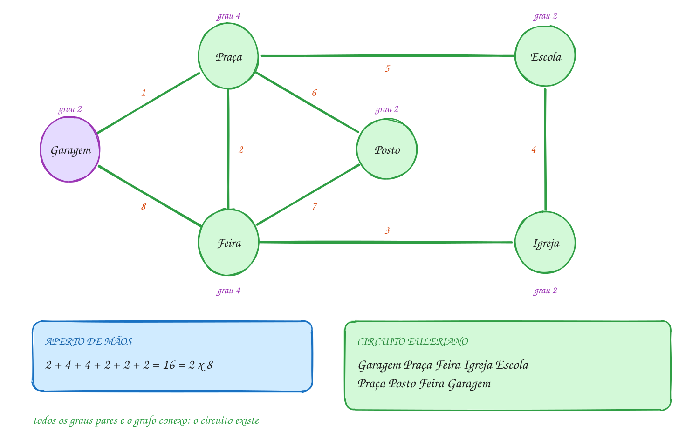
O código guarda as ruas numa matriz de contagem, confere Euler e roda o Hierholzer com pilha explícita:
#include <stdbool.h>
#include <stdio.h>
#define V 6
#define MAX_RUAS 16
const char *esquinas[V] = {"Garagem", "Praça", "Feira", "Escola", "Igreja", "Posto"};
int rua[V][V]; // rua[u][v] = quantas ruas ligam u e v (mão dupla)
int grau(int u) {
int g = 0;
for (int v = 0; v < V; v++) g += rua[u][v];
return g;
}
// Hierholzer: anda por ruas ainda não usadas; quando trava, a esquina
// sai da pilha e entra no circuito (de trás para frente)
int hierholzer(int inicio, int circuito[]) {
int pilha[MAX_RUAS + 1], topo = 0, n = 0;
pilha[topo++] = inicio;
while (topo > 0) {
int u = pilha[topo - 1];
int v = 0;
while (v < V && rua[u][v] == 0) v++;
if (v < V) { // ainda há rua livre saindo de u
rua[u][v]--, rua[v][u]--; // apaga a rua: não passa de novo
pilha[topo++] = v;
} else { // travou: u está pronto
circuito[n++] = u;
topo--;
}
}
return n;
}
int main(void) {
int ruas[][2] = {{0, 1}, {0, 2}, {1, 2}, {1, 3}, {1, 5}, {2, 4}, {2, 5}, {3, 4}};
int e = 8;
for (int k = 0; k < e; k++) {
rua[ruas[k][0]][ruas[k][1]]++;
rua[ruas[k][1]][ruas[k][0]]++;
}
int soma = 0, impares = 0;
for (int u = 0; u < V; u++) {
printf("grau(%s) = %d\n", esquinas[u], grau(u));
soma += grau(u);
if (grau(u) % 2 != 0) impares++;
}
printf("Soma dos graus: %d = 2 x %d ruas\n", soma, e);
if (impares != 0) {
printf("%d esquinas de grau ímpar: não há circuito\n", impares);
return 0;
}
int circuito[MAX_RUAS + 1];
int n = hierholzer(0, circuito);
printf("Circuito:");
for (int i = n - 1; i >= 0; i--) printf(" %s", esquinas[circuito[i]]);
printf("\n(%d ruas, cada uma uma vez)\n", n - 1);
return 0;
}
// Saída:
// grau(Garagem) = 2
// grau(Praça) = 4
// grau(Feira) = 4
// grau(Escola) = 2
// grau(Igreja) = 2
// grau(Posto) = 2
// Soma dos graus: 16 = 2 x 8 ruas
// Circuito: Garagem Praça Feira Igreja Escola Praça Posto Feira Garagem
// (8 ruas, cada uma uma vez)
Cada volta olha o topo da pilha: com rua livre, avança e a apaga; sem, a esquina vai para o circuito:
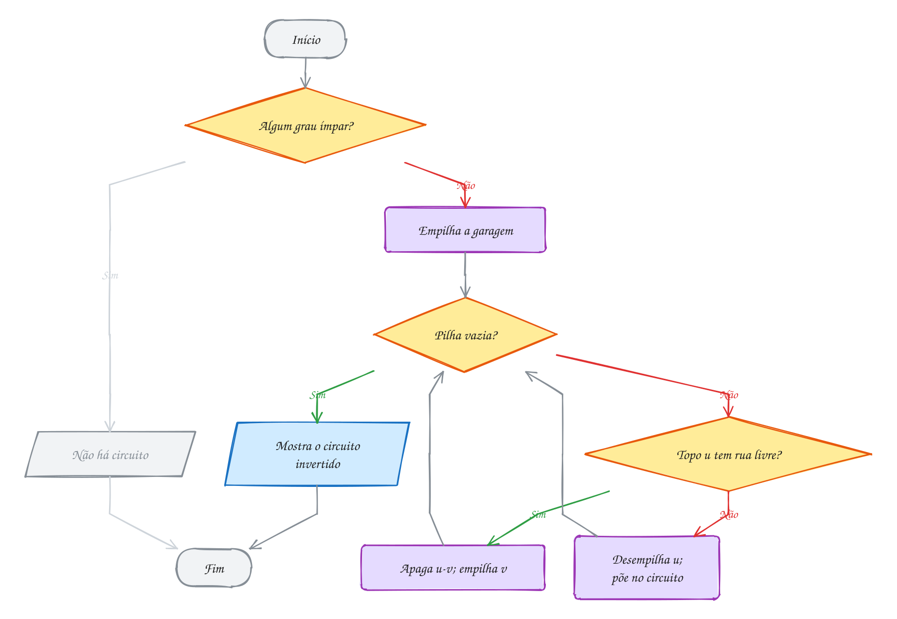
A pilha depois de cada passo (topo à direita). O primeiro passeio fecha cedo e deixa 5 ruas para trás; o desvio sai da Feira e é encaixado ali:
| Passo | Pilha | Circuito (ao contrário) |
|---|---|---|
| G → P → F → G | G P F G | |
| G travou | G P F | G |
| F → I → E → P → S → F | G P F I E P S F | G |
| todos travam, um a um | G F S P E I F P G |
Invertido: Garagem Praça Feira Igreja Escola Praça Posto Feira Garagem. Praça e Feira repetem: é um circuito, não um ciclo. O A363 faz as contas de grau num dirigido; o A364 desenha a casinha "sem tirar o lápis", um trajeto aberto.
Exemplo A363 · Seguidores: grau de entrada e de saída
#include <stdio.h>
#define V 5
// grafo DIRIGIDO: segue[a][b] = 1 quer dizer "a segue b"
const char *perfis[V] = {"Ana", "Beto", "Caio", "Duda", "Elis"};
int segue[V][V];
int main(void) {
int setas[][2] = {{0, 1}, {0, 3}, {1, 3}, {2, 3}, {4, 3}, {3, 0}, {2, 0}, {4, 2}};
int e = 8;
for (int k = 0; k < e; k++) segue[setas[k][0]][setas[k][1]] = 1;
int soma_entrada = 0, soma_saida = 0, famoso = 0, maior = -1;
printf("perfil segue (saída) seguidores (entrada)\n");
for (int u = 0; u < V; u++) {
int saida = 0, entrada = 0;
for (int v = 0; v < V; v++) {
saida += segue[u][v]; // linha u: setas que saem de u
entrada += segue[v][u]; // coluna u: setas que chegam em u
}
printf("%-6s %13d %20d\n", perfis[u], saida, entrada);
soma_saida += saida;
soma_entrada += entrada;
if (entrada > maior) maior = entrada, famoso = u;
}
printf("Soma das saídas: %d; soma das entradas: %d; setas: %d\n", soma_saida, soma_entrada, e);
printf("Mais seguido: %s, com %d seguidores\n", perfis[famoso], maior);
return 0;
}
// Saída:
// perfil segue (saída) seguidores (entrada)
// Ana 2 2
// Beto 1 1
// Caio 2 1
// Duda 1 4
// Elis 2 0
// Soma das saídas: 8; soma das entradas: 8; setas: 8
// Mais seguido: Duda, com 4 seguidores
//
// No dirigido, cada seta conta uma vez na saída de quem segue e uma vez na
// entrada de quem é seguido. As duas somas dão E, e juntas dão 2E: é o
// mesmo aperto de mãos, dividido em dois. Grau de entrada é a coluna da
// matriz; grau de saída é a linha.
gcc ~/LPEDC/material/A363.c -o ~/LPEDC/material/A363 && ~/LPEDC/material/A363
Exemplo A364 · A casinha sem tirar o lápis do papel
#include <stdio.h>
#define V 5
#define MAX_TRACOS 8
// os cantos da casinha: A e B no chão, C e D no alto das paredes, E no telhado
const char nome[V] = {'A', 'B', 'C', 'D', 'E'};
int traco[V][V];
int grau(int u) {
int g = 0;
for (int v = 0; v < V; v++) g += traco[u][v];
return g;
}
int main(void) {
// chão, paredes, teto, o X dentro e as duas águas do telhado
int tracos[][2] = {{0, 1}, {0, 2}, {1, 3}, {2, 3}, {0, 3}, {1, 2}, {2, 4}, {3, 4}};
for (int k = 0; k < MAX_TRACOS; k++) {
traco[tracos[k][0]][tracos[k][1]] = 1;
traco[tracos[k][1]][tracos[k][0]] = 1;
}
int impares[V], n_impares = 0;
for (int u = 0; u < V; u++)
if (grau(u) % 2 != 0) impares[n_impares++] = u;
printf("Cantos de grau ímpar: %d\n", n_impares);
if (n_impares != 0 && n_impares != 2) {
printf("Impossível sem tirar o lápis\n");
return 0;
}
int inicio = n_impares == 2 ? impares[0] : 0; // trajeto aberto: começa num ímpar
// Hierholzer: o mesmo do texto, agora a partir de um vértice ímpar
int pilha[MAX_TRACOS + 1], topo = 0, ordem[MAX_TRACOS + 1], n = 0;
pilha[topo++] = inicio;
while (topo > 0) {
int u = pilha[topo - 1], v = 0;
while (v < V && traco[u][v] == 0) v++;
if (v < V) {
traco[u][v] = traco[v][u] = 0;
pilha[topo++] = v;
} else {
ordem[n++] = u;
topo--;
}
}
printf("Desenho: ");
for (int i = n - 1; i >= 0; i--) printf("%c%s", nome[ordem[i]], i > 0 ? "-" : "\n");
printf("Começa em %c e termina em %c\n", nome[ordem[n - 1]], nome[ordem[0]]);
return 0;
}
// Saída:
// Cantos de grau ímpar: 2
// Desenho: A-B-C-A-D-C-E-D-B
// Começa em A e termina em B
//
// Os dois cantos do chão têm grau 3; os outros, grau par. Por isso o
// desenho é um TRAJETO aberto (nenhum traço repete) que tem de começar num
// canto do chão e terminar no outro. Comece em C e você trava com um traço
// sobrando, por mais que tente.
gcc ~/LPEDC/material/A364.c -o ~/LPEDC/material/A364 && ~/LPEDC/material/A364
Exercício E1087 · ★☆☆
A ciclovia do parque liga seis pontos: Bosque, Lago, Mirante, Ponte, Quiosque e Trilha (índices 0 a 5). Os trechos, todos de mão dupla, são:
Bosque-Lago, Bosque-Mirante, Lago-Mirante, Lago-Ponte,
Mirante-Quiosque, Ponte-Quiosque, Quiosque-Trilha
Escreva o programa do zero: monte a matriz de adjacência, mostre o grau de cada ponto, a soma dos graus (confira o lema do aperto de mãos) e quantos pontos têm grau ímpar.
Saída esperada:
Bosque: 2
Lago: 3
Mirante: 3
Ponte: 2
Quiosque: 3
Trilha: 1
Soma dos graus: 14 (2 x 7 trechos)
Pontos de grau ímpar: 4
Exercício E1089 · ★★☆
Escreva um programa com o tipo Grafo (nome, v e a matriz m[MAXV][MAXV], em que m[a][b] conta as arestas paralelas entre a e b) e a função analisa(const Grafo *g), que diz se o grafo tem circuito euleriano, trajeto euleriano aberto (entre quais vértices) ou nenhum dos dois, e por quê. Confira a conexidade (por DFS) antes dos graus. Analise, nesta ordem, quatro grafos (arestas entre vértices numerados a partir de 0):
bairro (6 vértices): 0-1 0-2 1-2 1-3 1-5 2-4 2-5 3-4
casinha (5): 0-1 0-2 1-3 2-3 0-3 1-2 2-4 3-4
triângulos (6): 0-1 1-2 2-0 3-4 4-5 5-3
pontes (4): 0-1 0-1 0-2 0-2 0-3 1-3 2-3
Saída esperada:
bairro: circuito euleriano
casinha: trajeto euleriano de 0 a 1
triângulos: nenhum (desconexo)
pontes: nenhum (4 vértices ímpares)
Exercício E1090 · ★★☆
O caminhão do gás roda num centro só de ruas de mão única. Os pontos são Depósito, Mercado, Praça, Hospital e Escola (0 a 4), e as ruas:
Depósito->Mercado, Mercado->Praça, Praça->Depósito,
Praça->Hospital, Hospital->Escola, Escola->Praça
Escreva o programa: a função balanceado() mostra cada ponto em que o grau de entrada é diferente do de saída e devolve true se não houver nenhum; a função circuito(inicio) roda o Hierholzer DIRIGIDO e mostra o circuito. Depois, simule uma obra que inverte a rua Hospital->Escola (vira Escola->Hospital) e rode de novo.
Saída esperada:
Antes da obra:
Circuito: Depósito Mercado Praça Hospital Escola Praça Depósito
Depois da obra:
Hospital: entram 2, saem 0
Escola: entram 0, saem 2
Sem circuito
Exercício E1092 · ★★★
O envelope fechado é um quadrado com as duas diagonais: cantos A, B, C, D e os traços A-B, B-C, C-D, D-A, A-C, B-D. Todo canto tem grau 3, então não dá para desenhar sem tirar o lápis. Com 2k cantos ímpares, o mínimo é k traços. Escreva o programa que acha esses traços:
1. conte os cantos ímpares e mostre quantos traços são necessários;
2. crie um vértice falso X ligado aos dois últimos ímpares (eles viram
pares, e sobram 2 ímpares);
3. rode o Hierholzer a partir do primeiro ímpar;
4. mostre o trajeto cortado onde aparece o X: cada pedaço é um traço.
Saída esperada:
Cantos ímpares: 4 -> 2 traços
Traço 1: A B C A D C
Traço 2: D B
O carro-forte abastece cinco agências e volta à base. Repetir rua não importa; parar duas vezes na mesma agência, sim, porque cada parada custa tempo e escolta. Existe uma rota que passa por cada agência exatamente uma vez e volta? A pergunta parece a do caminhão de lixo do 0182, só que com "vértice" no lugar de "aresta". A troca de uma palavra muda tudo: para arestas existe um teste rápido, e para vértices ninguém conhece um.
Um ciclo hamiltoniano é um ciclo que passa por todos os vértices do grafo, cada um uma única vez, e volta ao primeiro. No vocabulário do Cormen, é um ciclo simples que contém todos os vértices. Um caminho hamiltoniano é a mesma coisa sem a volta ao começo: visita todos os vértices uma vez e termina em outro lugar (CORMEN et al., 2024, cap. 34).
Para Euler bastava olhar os graus. Para Hamilton, não se conhece nenhuma condição simples que seja ao mesmo tempo necessária e suficiente, e também não se conhece algoritmo polinomial, isto é, com custo limitado por uma potência de V. O problema de decidir se um grafo tem ciclo hamiltoniano está na lista clássica de problemas NP-completos (KARP, 1972), uma classe que o 0186 apresenta com calma.
O que existe são condições suficientes: se valem, o ciclo existe; se não valem, nada se conclui. A mais conhecida é a de Dirac: se o grafo tem V ≥ 3 vértices e todo vértice tem grau ≥ V/2, então ele tem ciclo hamiltoniano (SZWARCFITER, 2018). A intuição é que, com tantos vizinhos, sempre sobra uma saída. A recíproca é falsa: um ciclo puro de 100 vértices tem grau 2 em todos, muito abaixo de 50, e é hamiltoniano, porque ele mesmo é o ciclo.
A tabela compara os dois problemas, para que você não troque um pelo outro na prova:
| Euler (0182) | Hamilton | |
|---|---|---|
| passa uma vez por cada | aresta | vértice |
| teste | graus pares + conexo | nenhum teste rápido conhecido |
| custo para achar | O(V + E) | exponencial no pior caso |
| classe (0186) | P | NP-completo |
Sem teste rápido, sobra testar as possibilidades, e o jeito organizado de
fazer isso é o backtracking do módulo 19. A rota é montada por posição,
num vetor rota[]. Na posição pos, o algoritmo escolhe um vizinho do
vértice da posição pos - 1 que ainda não esteja na rota, põe nessa posição
e desce para pos + 1. Se lá embaixo nenhuma escolha der certo, ele volta,
desfaz a escolha feita em pos e tenta o próximo vizinho. Quando as V
posições estão preenchidas, só falta conferir se o último vértice liga ao
primeiro (ZIVIANI, 2010).
Duas economias saem de graça. A primeira: todo ciclo pode começar em
qualquer um dos seus vértices, então fixar rota[0] = 0 não perde nenhuma
resposta e divide o trabalho por V. A segunda: um vetor usada[] de
booleanos marca quem já está na rota, e a pergunta "esse vértice já entrou?"
custa O(1) em vez de uma varredura. Mesmo assim, no pior caso sobram (V - 1)!
ordens a testar. Com 15 vértices, são 14! ≈ 87 bilhões.
[!WARNING] Esquecer o
usada[v] = falsedepois da chamada recursiva deixa "queimado" todo vértice de uma tentativa que falhou, e o programa diz "não existe" para grafos que têm ciclo.
Um carro-forte abastece cinco agências e volta à base, parando uma vez em cada. A primeira tentativa trava no Shopping, sem via para a Base; o backtracking volta ao Mercado, troca Porto por Shopping e fecha pelo Porto:
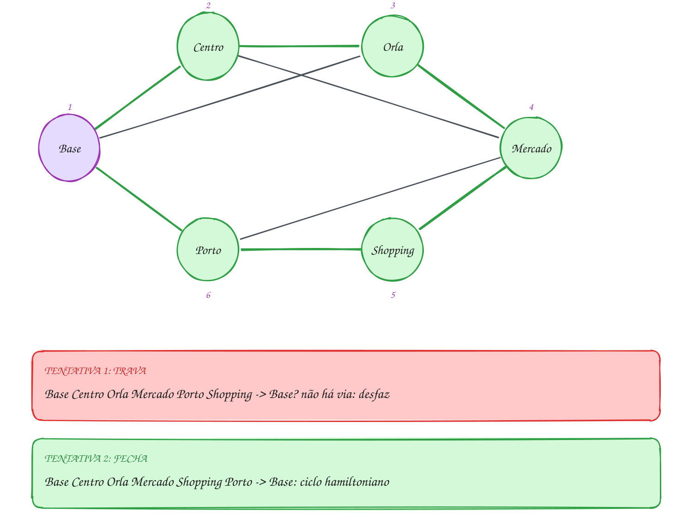
O código conta as chamadas da recursão:
#include <stdbool.h>
#include <stdio.h>
#define V 6
const char *agencias[V] = {"Base", "Centro", "Orla", "Mercado", "Porto", "Shopping"};
int via[V][V];
int rota[V]; // rota[i] = i-ésima agência visitada
bool usada[V];
long chamadas = 0;
// tenta pôr uma agência na posição pos da rota
bool hamilton(int pos) {
chamadas++;
if (pos == V) return via[rota[V - 1]][rota[0]]; // fecha o ciclo na Base?
for (int v = 1; v < V; v++) {
if (!via[rota[pos - 1]][v] || usada[v]) continue;
rota[pos] = v;
usada[v] = true;
if (hamilton(pos + 1)) return true;
usada[v] = false; // desfaz: volta atrás e tenta outra
}
return false;
}
int main(void) {
int vias[][2] = {{0, 1}, {0, 2}, {0, 4}, {1, 2}, {1, 3}, {2, 3}, {3, 4}, {3, 5}, {4, 5}};
for (int k = 0; k < 9; k++) via[vias[k][0]][vias[k][1]] = via[vias[k][1]][vias[k][0]] = 1;
rota[0] = 0;
usada[0] = true;
if (hamilton(1)) {
printf("Ciclo hamiltoniano:");
for (int i = 0; i < V; i++) printf(" %s", agencias[rota[i]]);
printf(" %s\n", agencias[rota[0]]);
} else {
printf("Não existe ciclo hamiltoniano\n");
}
printf("Chamadas da recursão: %ld\n", chamadas);
return 0;
}
// Saída:
// Ciclo hamiltoniano: Base Centro Orla Mercado Shopping Porto Base
// Chamadas da recursão: 8
Este grafo não tem circuito euleriano (quatro agências de grau ímpar) e tem
ciclo hamiltoniano. O fluxograma mostra uma chamada de hamilton(pos): o
trabalho está no laço que escolhe o vizinho e na linha que desfaz a escolha:
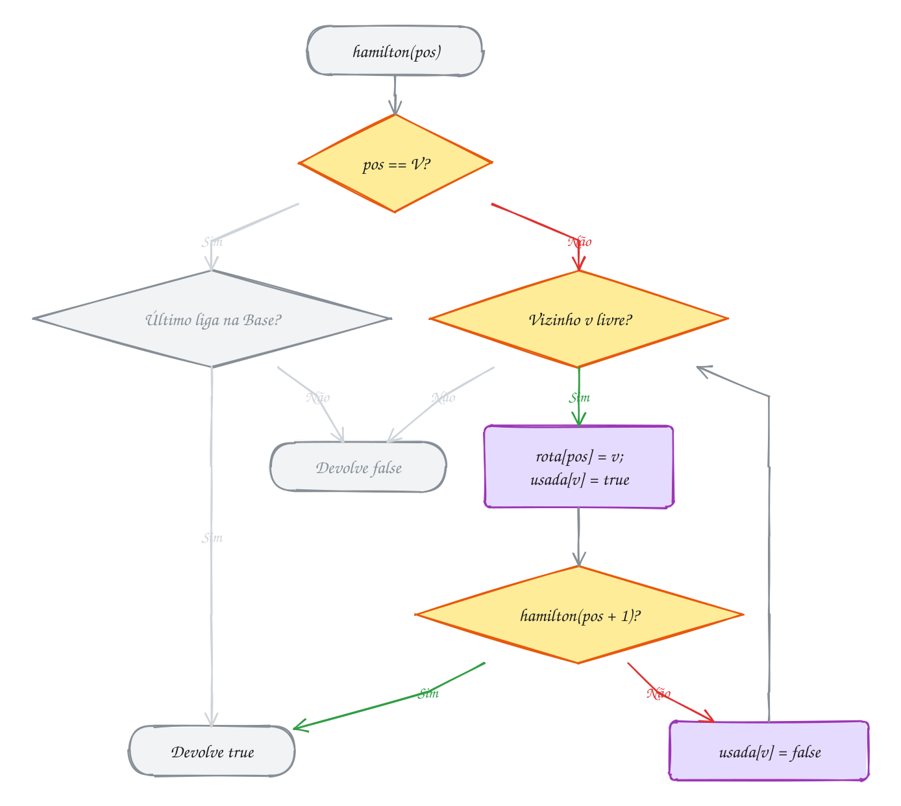
Exemplo A365 · Euleriano sim, hamiltoniano não
#include <stdbool.h>
#include <stdio.h>
#define V 5
// duas trilhas em triângulo que se cruzam no Mirante (formato de gravata)
const char *pontos[V] = {"Mirante", "Cachoeira", "Gruta", "Lagoa", "Pedra"};
int trilha[V][V];
int rota[V];
bool usado[V];
long chamadas = 0;
bool hamilton(int pos) {
chamadas++;
if (pos == V) return trilha[rota[V - 1]][rota[0]];
for (int v = 1; v < V; v++) {
if (!trilha[rota[pos - 1]][v] || usado[v]) continue;
rota[pos] = v;
usado[v] = true;
if (hamilton(pos + 1)) return true;
usado[v] = false;
}
return false;
}
int main(void) {
int trechos[][2] = {{0, 1}, {1, 2}, {2, 0}, {0, 3}, {3, 4}, {4, 0}};
for (int k = 0; k < 6; k++) trilha[trechos[k][0]][trechos[k][1]] = trilha[trechos[k][1]][trechos[k][0]] = 1;
int impares = 0;
for (int u = 0; u < V; u++) {
int g = 0;
for (int v = 0; v < V; v++) g += trilha[u][v];
printf("grau(%s) = %d\n", pontos[u], g);
if (g % 2) impares++;
}
printf("Circuito euleriano: %s\n", impares == 0 ? "sim (todos os graus pares)" : "não");
rota[0] = 0;
usado[0] = true;
printf("Ciclo hamiltoniano: %s\n", hamilton(1) ? "sim" : "não");
printf("Chamadas até desistir: %ld\n", chamadas);
return 0;
}
// Saída:
// grau(Mirante) = 4
// grau(Cachoeira) = 2
// grau(Gruta) = 2
// grau(Lagoa) = 2
// grau(Pedra) = 2
// Circuito euleriano: sim (todos os graus pares)
// Ciclo hamiltoniano: não
// Chamadas até desistir: 9
//
// O guia percorre as seis trilhas sem repetir nenhuma (Mirante, Cachoeira,
// Gruta, Mirante, Lagoa, Pedra, Mirante), mas passa duas vezes pelo
// Mirante. Um ciclo hamiltoniano teria de cruzar o Mirante uma vez só, e
// ele é a única ligação entre os dois triângulos: impossível. O Euler
// respondeu com uma conta de graus; o backtracking só respondeu "não"
// depois de esgotar todas as rotas.
gcc ~/LPEDC/material/A365.c -o ~/LPEDC/material/A365 && ~/LPEDC/material/A365
Exemplo A366 · Quando a resposta é não: o custo explode
#include <stdbool.h>
#include <stdio.h>
#define MAXV 12
int n; // vértices em uso: n - 1 formam um grafo completo, o último é uma "folha"
int adj[MAXV][MAXV];
int rota[MAXV];
bool usado[MAXV];
long chamadas;
bool hamilton(int pos) {
chamadas++;
if (pos == n) return adj[rota[n - 1]][rota[0]];
for (int v = 1; v < n; v++) {
if (!adj[rota[pos - 1]][v] || usado[v]) continue;
rota[pos] = v;
usado[v] = true;
if (hamilton(pos + 1)) return true;
usado[v] = false;
}
return false;
}
int main(void) {
printf("vértices chamadas fatorial (V-2)!\n");
long fat = 1;
for (n = 4; n <= 11; n++) {
for (int a = 0; a < n; a++)
for (int b = 0; b < n; b++) adj[a][b] = 0;
for (int a = 0; a < n - 1; a++) // os n - 1 primeiros: todos ligados a todos
for (int b = 0; b < n - 1; b++) adj[a][b] = a != b;
adj[1][n - 1] = adj[n - 1][1] = 1; // a folha só se liga ao vértice 1
for (int v = 0; v < n; v++) usado[v] = false;
chamadas = 0;
rota[0] = 0;
usado[0] = true;
bool achou = hamilton(1);
fat *= n - 2 > 1 ? n - 2 : 1;
printf("%8d %8ld %15ld %s\n", n, chamadas, fat, achou ? "achou" : "não existe");
}
return 0;
}
// Saída:
// vértices chamadas fatorial (V-2)!
// 4 7 2 não existe
// 5 21 6 não existe
// 6 81 24 não existe
// 7 391 120 não existe
// 8 2283 720 não existe
// 9 15657 5040 não existe
// 10 123301 40320 não existe
// 11 1096011 362880 não existe
//
// A folha tem grau 1: nenhum ciclo pode entrar e sair dela, e a resposta é
// "não" para qualquer tamanho. Um teste de grau resolveria na hora, mas o
// backtracking puro não sabe disso e tenta as rotas dos n - 1 vértices do
// grafo completo. Cada vértice a mais multiplica as chamadas por quase n:
// é o crescimento fatorial. Com 20 vértices seriam mais de 10^16 chamadas.
gcc ~/LPEDC/material/A366.c -o ~/LPEDC/material/A366 && ~/LPEDC/material/A366
Exercício E1093 · ★☆☆
Achar um ciclo hamiltoniano é difícil; conferir um é fácil. O mapa das agências tem 6 vértices (0 a 5) e as vias 0-1, 0-2, 0-4, 1-2, 1-3, 2-3, 3-4, 3-5 e 4-5, guardadas na matriz via. Escreva bool eh_ciclo_hamiltoniano(const int rota[], int n), que recebe uma rota (sem repetir o primeiro no fim) e responde se ela é um ciclo hamiltoniano: tem os V vértices, nenhum repetido, e cada vizinho da rota (inclusive o último com o primeiro) tem via. Teste as quatro rotas:
rota 1: 0 1 2 3 5 4 rota 2: 0 1 2 3 4 5
rota 3: 0 2 1 3 5 4 rota 4: 0 1 3 5 4 1
Saída esperada:
Rota 1: válida
Rota 2: inválida
Rota 3: válida
Rota 4: inválida
Exercício E1095 · ★★☆
O carro-forte quer saber quantas rotas diferentes existem, não só uma. Escreva int conta(int pos), uma variação do hamilton do texto que não para na primeira rota: soma quantas rotas completas existem a partir da Base. Cada ciclo aparece duas vezes (uma em cada sentido), então divida por 2 para ter os ciclos distintos. Rode no mapa das agências e no grafo completo de 5 vértices (todos ligados a todos).
Saída esperada:
Agências: 4 rotas, 2 ciclos distintos
Completo com 5: 24 rotas, 12 ciclos distintos
Exercício E1096 · ★★☆
Num quadrangular de turno único, cinco times jogaram todos contra todos (sem empate): Bahia, Ceará, Fortaleza, Remo e Sport (0 a 4). Resultados, vencedor primeiro:
Bahia x Ceará, Fortaleza x Bahia, Bahia x Sport, Remo x Bahia,
Ceará x Fortaleza, Ceará x Remo, Sport x Ceará, Fortaleza x Remo,
Fortaleza x Sport, Sport x Remo
O jornalista quer pôr os cinco numa fila em que cada time venceu o seguinte. Isso é um CAMINHO hamiltoniano num grafo DIRIGIDO (seta do vencedor para o perdedor). Escreva o backtracking que acha a primeira fila, tentando os inícios e os vizinhos em ordem de índice.
Saída esperada:
Bahia > Ceará > Fortaleza > Sport > Remo
Exercício E1098 · ★★★
O passeio do cavalo: num tabuleiro 5 x 5, o cavalo do xadrez sai do canto de cima à esquerda e precisa pisar em todas as 25 casas, uma vez cada. É um CAMINHO hamiltoniano no grafo em que cada casa é um vértice e cada salto em L é uma aresta, mas você não precisa montar a matriz: os vizinhos saem das oito jogadas. Escreva o backtracking bool passeio(int l, int c, int k), que põe o número k na casa (l, c) e tenta os saltos nesta ordem (linha, coluna):
(+2,+1) (+1,+2) (-1,+2) (-2,+1) (-2,-1) (-1,-2) (+1,-2) (+2,-1)
Mostre o tabuleiro com a ordem das casas (%3d) e o número de chamadas.
Saída esperada:
1 6 15 10 21
14 9 20 5 16
19 2 7 22 11
8 13 24 17 4
25 18 3 12 23
Chamadas: 8840
Uma operadora liga sete bairros com cabos de fibra. Duas perguntas tiram o sono do engenheiro: se um cabo for cortado, algum bairro fica sem sinal? E se a central de um bairro pegar fogo, os outros continuam se falando? Essas são as duas perguntas de conectividade do edital, e as duas têm resposta com uma única busca em profundidade.
Lembre que um grafo não dirigido se divide em componentes conexos, os pedaços dentro dos quais todo vértice alcança todo outro (0150). Uma ponte, também chamada aresta de corte, é uma aresta cuja remoção aumenta o número de componentes: sem ela, o grafo se parte. Um vértice de articulação, também chamado ponto de corte, é um vértice cuja remoção, junto com as arestas que tocam nele, aumenta o número de componentes (SZWARCFITER, 2018). Na rede da operadora, a ponte é o cabo que, cortado, isola um bairro; a articulação é a central que, fora do ar, separa a rede em dois.
O jeito ingênuo de achar as pontes é tirar uma aresta de cada vez e rodar uma DFS para ver se o grafo continua conexo. São E buscas de custo O(V + E) cada, O(E · (V + E)) no total. Tarjan mostrou que basta uma DFS só, O(V + E), desde que ela anote dois números em cada vértice (TARJAN, 1972).
O primeiro número é tin[u], o tempo de descoberta: a DFS mantém um
relógio que avança cada vez que ela entra num vértice novo, e tin[u] é o
valor do relógio na entrada de u. Quanto menor o tin, mais perto da raiz
da DFS o vértice está no caminho atual. O segundo é low[u]: o menor tin
que dá para alcançar a partir de u descendo pela árvore da DFS e usando, no
fim, uma aresta de volta para um ancestral (FEOFILOFF, s.d., Algoritmos
para grafos). Ele mede até onde a subárvore de u consegue escapar para cima
sem passar pela aresta que liga u ao pai.
O low funciona por causa de uma propriedade da DFS em grafo não dirigido:
toda aresta é ou da árvore, quando leva a um vértice ainda não visitado,
ou de volta, quando leva a um ancestral. Não existe aresta que cruze para
um galho vizinho da árvore, porque a DFS teria seguido por ela antes de
terminar o primeiro galho (CORMEN et al., 2024, cap. 20). Assim, a única
forma de uma subárvore se ligar ao resto é pela aresta do pai ou por arestas
de volta, e o low mede exatamente as arestas de volta.
As regras saem disso, olhando uma aresta da árvore u - v, com v filho de
u, na volta da recursão, quando low[v] já está completo (TARJAN, 1972). A
aresta é ponte se low[v] > tin[u]: nada abaixo de v alcança u ou
algum vértice acima dele, então cortar u - v isola a subárvore de v. O
vértice u é articulação se low[v] >= tin[u] e u não é a raiz: a
subárvore de v volta no máximo até o próprio u, e sem u ela fica
sozinha. A diferença entre > e >= é a diferença entre cortar um cabo e
derrubar uma central: se low[v] é igual a tin[u], a subárvore tem outro
cabo até u, mas nenhum caminho que desvie de u.
A raiz da DFS precisa de uma regra própria. Ela tem o menor tin de todos,
então low[v] >= tin[u] vale sempre para os filhos dela, e a regra acima
marcaria toda raiz como articulação. O critério certo é outro: a raiz é
articulação só se tiver dois ou mais filhos na árvore da DFS. Se tem dois
filhos, não há aresta entre as subárvores deles (seria de cruzamento), e
tirar a raiz as separa.
[!WARNING] Usar
low[v] >= tin[u]também na raiz sempre dá verdadeiro e a marca como articulação sem ser. E trocar>por>=na ponte cria pontes falsas em toda aresta que entra num ciclo.
Uma operadora liga sete bairros de Manaus com fibra: que cabo cortado deixa
bairro sem sinal? Do Centro, a DFS desce em ordem de índice. Ao lado de cada
bairro, tin/low; verdes são as pontes, amarelos as articulações:
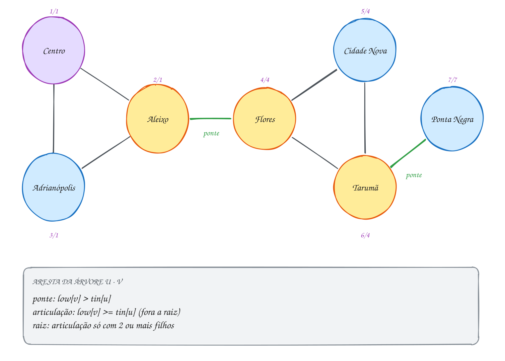
#include <stdbool.h>
#include <stdio.h>
#define V 7
const char *bairros[V] = {"Centro", "Aleixo", "Adrianópolis", "Flores", "Cidade Nova", "Tarumã", "Ponta Negra"};
int fibra[V][V];
int tin[V]; // tempo de descoberta (0 = ainda não visitado)
int low[V]; // menor tin que a subárvore alcança com UMA aresta de volta
bool corte[V]; // vértice de articulação
int relogio = 0;
void dfs(int u, int pai) {
tin[u] = low[u] = ++relogio;
int filhos = 0;
for (int v = 0; v < V; v++) {
if (!fibra[u][v] || v == pai) continue;
if (tin[v] != 0) { // aresta de volta: v é ancestral
if (tin[v] < low[u]) low[u] = tin[v];
continue;
}
filhos++;
dfs(v, u); // aresta da árvore u - v
if (low[v] < low[u]) low[u] = low[v];
if (low[v] > tin[u]) // v não volta acima de u
printf("Ponte: %s - %s\n", bairros[u], bairros[v]);
if (pai != -1 && low[v] >= tin[u]) // v não volta acima de u nem pula u
corte[u] = true;
}
if (pai == -1 && filhos >= 2) corte[u] = true; // raiz: caso especial
}
int main(void) {
int cabos[][2] = {{0, 1}, {1, 2}, {2, 0}, {1, 3}, {3, 4}, {4, 5}, {5, 3}, {5, 6}};
for (int k = 0; k < 8; k++) fibra[cabos[k][0]][cabos[k][1]] = fibra[cabos[k][1]][cabos[k][0]] = 1;
dfs(0, -1);
printf("Articulações:");
for (int u = 0; u < V; u++)
if (corte[u]) printf(" %s", bairros[u]);
printf("\n");
for (int u = 0; u < V; u++) printf("%s: tin %d, low %d\n", bairros[u], tin[u], low[u]);
return 0;
}
// Saída:
// Ponte: Tarumã - Ponta Negra
// Ponte: Aleixo - Flores
// Articulações: Aleixo Flores Tarumã
// Centro: tin 1, low 1
// Aleixo: tin 2, low 1
// Adrianópolis: tin 3, low 1
// Flores: tin 4, low 4
// Cidade Nova: tin 5, low 4
// Tarumã: tin 6, low 4
// Ponta Negra: tin 7, low 7
As duas perguntas vêm na volta da recursão, com low[v] completo:
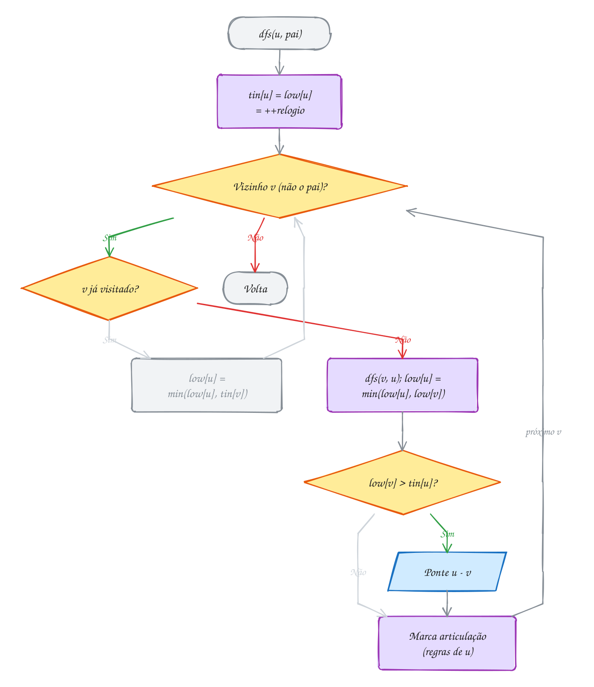
| Evento | tin / low atualizados | Conclusão |
|---|---|---|
| entra em Centro, Aleixo, Adrianópolis | tin 1, 2, 3 | |
| Adrianópolis vê Centro (volta) | low[Adrianópolis] = 1 | |
| volta a Aleixo | low[Aleixo] = 1 | Aleixo - Adrianópolis não é ponte (1 ≤ 2) |
| entra em Flores, Cidade Nova, Tarumã | tin 4, 5, 6 | |
| Tarumã vê Flores (volta) | low[Tarumã] = 4 | |
| entra em Ponta Negra; ela não tem volta | tin 7, low 7 | 7 > 6: ponte Tarumã - Ponta Negra; Tarumã é articulação |
| volta a Cidade Nova | low = 4 | 4 ≤ 5: nada |
| volta a Flores | low = 4 | 4 ≥ 4: Flores é articulação; 4 > 4 é falso: não é ponte |
| volta a Aleixo | low[Flores] = 4 | 4 > 2: ponte Aleixo - Flores; Aleixo é articulação |
| volta ao Centro (raiz) | um filho só: não é articulação |
Flores é articulação, mas Flores - Cidade Nova não é ponte (o triângulo tem
dois caminhos): a diferença é o > contra o >=.
Exemplo A367 · A raiz da DFS é um caso à parte
#include <stdbool.h>
#include <stdio.h>
#define V 5
// linhas de ônibus: Terminal, Bosque e Campus em triângulo; Terminal segue
// sozinho até a Vila, e a Vila até o Sítio
const char *pontos[V] = {"Terminal", "Bosque", "Campus", "Vila", "Sítio"};
int linha[V][V];
int tin[V], low[V], relogio;
bool certo[V], ingenuo[V]; // com e sem o caso especial da raiz
void dfs(int u, int pai) {
tin[u] = low[u] = ++relogio;
int filhos = 0;
for (int v = 0; v < V; v++) {
if (!linha[u][v] || v == pai) continue;
if (tin[v] != 0) {
if (tin[v] < low[u]) low[u] = tin[v];
continue;
}
filhos++;
dfs(v, u);
if (low[v] < low[u]) low[u] = low[v];
if (low[v] >= tin[u]) {
ingenuo[u] = true; // aplica a regra a todo mundo
if (pai != -1) certo[u] = true; // fora a raiz
}
}
if (pai == -1 && filhos >= 2) certo[u] = true;
}
void roda(int raiz) {
relogio = 0;
for (int u = 0; u < V; u++) tin[u] = 0, certo[u] = ingenuo[u] = false;
dfs(raiz, -1);
printf("Raiz %s\n regra certa:", pontos[raiz]);
for (int u = 0; u < V; u++)
if (certo[u]) printf(" %s", pontos[u]);
printf("\n sem caso da raiz:");
for (int u = 0; u < V; u++)
if (ingenuo[u]) printf(" %s", pontos[u]);
printf("\n");
}
int main(void) {
int trechos[][2] = {{0, 1}, {1, 2}, {2, 0}, {0, 3}, {3, 4}};
for (int k = 0; k < 5; k++) linha[trechos[k][0]][trechos[k][1]] = linha[trechos[k][1]][trechos[k][0]] = 1;
roda(0);
roda(1);
return 0;
}
// Saída:
// Raiz Terminal
// regra certa: Terminal Vila
// sem caso da raiz: Terminal Vila
// Raiz Bosque
// regra certa: Terminal Vila
// sem caso da raiz: Terminal Bosque Vila
//
// Com raiz no Terminal, ele tem dois filhos na árvore (Bosque e Vila) e é
// articulação de verdade: as duas regras concordam. Com raiz no Bosque, a
// DFS desce Bosque -> Terminal -> Campus e volta ao Bosque pelo Campus: um
// filho só. Sem o caso especial, o Bosque aparece como articulação, mas
// tire o Bosque e o resto continua ligado. A resposta certa não pode
// depender de onde a DFS começa, e com o caso especial não depende.
gcc ~/LPEDC/material/A367.c -o ~/LPEDC/material/A367 && ~/LPEDC/material/A367
Exemplo A368 · Conferindo na força bruta: corta e conta
#include <stdbool.h>
#include <stdio.h>
#define V 7
const char *bairros[V] = {"Centro", "Aleixo", "Adrianópolis", "Flores", "Cidade Nova", "Tarumã", "Ponta Negra"};
int fibra[V][V];
bool visto[V];
long passos = 0; // quantas casas da matriz foram olhadas
void dfs(int u, int fora) { // fora = vértice desligado (-1 se nenhum)
visto[u] = true;
for (int v = 0; v < V; v++) {
passos++;
if (fibra[u][v] && !visto[v] && v != fora) dfs(v, fora);
}
}
int componentes(int fora) {
for (int u = 0; u < V; u++) visto[u] = false;
int c = 0;
for (int u = 0; u < V; u++)
if (u != fora && !visto[u]) c++, dfs(u, fora);
return c;
}
int main(void) {
int cabos[][2] = {{0, 1}, {1, 2}, {2, 0}, {1, 3}, {3, 4}, {4, 5}, {5, 3}, {5, 6}};
for (int k = 0; k < 8; k++) fibra[cabos[k][0]][cabos[k][1]] = fibra[cabos[k][1]][cabos[k][0]] = 1;
int base = componentes(-1);
printf("Componentes da rede inteira: %d\n", base);
for (int k = 0; k < 8; k++) { // corta um cabo, conta, religa
int a = cabos[k][0], b = cabos[k][1];
fibra[a][b] = fibra[b][a] = 0;
if (componentes(-1) > base) printf("Ponte: %s - %s\n", bairros[a], bairros[b]);
fibra[a][b] = fibra[b][a] = 1;
}
printf("Articulações:");
for (int u = 0; u < V; u++) // desliga um bairro, conta os que sobram
if (componentes(u) > base) printf(" %s", bairros[u]);
printf("\nCasas da matriz olhadas: %ld\n", passos);
return 0;
}
// Saída:
// Componentes da rede inteira: 1
// Ponte: Aleixo - Flores
// Ponte: Tarumã - Ponta Negra
// Articulações: Aleixo Flores Tarumã
// Casas da matriz olhadas: 735
//
// O mesmo resultado do texto, com um custo bem diferente: uma DFS completa
// para cada cabo e outra para cada bairro, E + V + 1 = 16 buscas de até V²
// casas cada. O algoritmo do texto faz UMA busca (49 casas). Com mil
// bairros e cinco mil cabos, seriam 6 mil buscas contra uma.
gcc ~/LPEDC/material/A368.c -o ~/LPEDC/material/A368 && ~/LPEDC/material/A368
Exercício E1099 · ★☆☆
As rodovias em volta de Manaus ligam seis cidades: Manaus, Iranduba, Manacapuru, Novo Airão, Rio Preto da Eva e Itacoatiara (0 a 5):
Manaus-Iranduba, Iranduba-Manacapuru, Manacapuru-Manaus,
Manacapuru-Novo Airão, Manaus-Rio Preto da Eva,
Rio Preto da Eva-Itacoatiara
Escreva do zero a versão força bruta (como o A368): para achar as pontes, tire cada rodovia, conte os componentes e devolva a rodovia; para achar as articulações, "desligue" cada cidade e conte os componentes das outras.
Saída esperada:
Pontes:
Manacapuru - Novo Airão
Manaus - Rio Preto da Eva
Rio Preto da Eva - Itacoatiara
Articulações:
Manaus
Manacapuru
Rio Preto da Eva
Exercício E1101 · ★★☆
A operadora do texto quer saber o tamanho do estrago de cada ponte: cortando o cabo, quantos bairros ficam sem sinal? Mude a DFS do texto para que ela devolva o tamanho da subárvore (int dfs(int u, int pai)) e, em cada ponte u - v, mostre quantos bairros ficam do lado de v. No fim, mostre quantos bairros a DFS alcançou a partir do Centro.
Saída esperada:
Cortar Tarumã - Ponta Negra isola 1 bairro(s)
Cortar Aleixo - Flores isola 4 bairro(s)
Bairros alcançados: 7
Exercício E1102 · ★★☆
A distribuidora de energia tem oito subestações: Usina, Norte, Sul, Leste, Oeste, Porto, Vila e Serra (0 a 7). As linhas:
Usina-Norte, Usina-Sul, Norte-Sul, Norte-Leste, Norte-Oeste,
Leste-Oeste, Sul-Porto, Porto-Vila, Porto-Serra
Não basta saber quais subestações são articulações: a distribuidora quer saber em QUANTOS pedaços a rede parte sem cada uma. Escreva a DFS com tin e low (raiz na Usina) que conta isso e mostre só as que partem a rede.
Saída esperada:
Sem Norte, a rede parte em 2 pedaços
Sem Sul, a rede parte em 2 pedaços
Sem Porto, a rede parte em 3 pedaços
Exercício E1103 · ★★★
A rede de energia do E1102 tem oito subestações: Usina, Norte, Sul, Leste, Oeste, Porto, Vila e Serra (0 a 7). As linhas:
Usina-Norte, Usina-Sul, Norte-Sul, Norte-Leste, Norte-Oeste,
Leste-Oeste, Sul-Porto, Porto-Vila, Porto-Serra
Escreva a DFS com tin e low (raiz na Usina, vizinhos em ordem de índice, ignorando só o pai) que mostra as linhas críticas (pontes). Cada ponte é mostrada ao voltar da recursão, no formato "Linha crítica: u - v". Linhas dentro de um triângulo têm caminho alternativo e não aparecem.
Saída esperada:
Linha crítica: Porto - Vila
Linha crítica: Porto - Serra
Linha crítica: Sul - Porto
Uma rede de farmácias multiplica quatro tabelas de dados em sequência: uma 10 × 30, uma 30 × 5, uma 5 × 60 e uma 60 × 10. O resultado final é uma matriz 10 × 10 em qualquer ordem de cálculo, mas numa ordem o servidor faz 5 mil multiplicações e noutra, 33 mil. O problema da multiplicação de cadeia de matrizes é achar a ordem mais barata, e ele é o exemplo clássico de programação dinâmica do Cormen (CORMEN et al., 2024, cap. 14).
Primeiro, o preço de um produto. Uma matriz p × q (p linhas, q colunas)
vezes uma q × r dá uma matriz p × r. Cada uma das p · r casas do
resultado é a soma de q produtos, uma linha da primeira vezes uma coluna da
segunda. O total é p · q · r multiplicações escalares (CORMEN et al., 2024,
cap. 14). Na rede de farmácias, a 10 × 30 vezes a 30 × 5 custa 10 · 30 · 5 =
1500.
A multiplicação de matrizes é associativa: (A B) C dá o mesmo resultado
que A (B C). Os parênteses não mudam a resposta, só o trabalho. Cada jeito
de pôr os parênteses numa cadeia se chama uma parentização, e o número
delas cresce depressa: 4 matrizes têm 5 parentizações; 10 têm 4862; 20 têm
mais de 1,7 bilhão. Esses números são os números de Catalan, que crescem
exponencialmente (CORMEN et al., 2024, cap. 14). Testar todas é inviável
já para cadeias médias.
A saída é olhar para a última multiplicação feita. Em qualquer parentização,
o último passo junta duas metades: (A1 ... Ak) vezes (Ak+1 ... An), para
algum ponto de corte k. Se a parentização inteira é a melhor, cada metade
também tem de estar na melhor ordem; senão, trocar a ordem dessa metade
baratearia o todo. Essa propriedade se chama subestrutura ótima: a
solução ótima é feita de soluções ótimas de pedaços menores. Escrevendo
m[i][j] para o menor custo de multiplicar Ai até Aj, e lembrando que
Ai tem tamanho p[i-1] × p[i], sai a recorrência (FEOFILOFF, s.d.,
Análise de algoritmos):
m[i][i] = 0
m[i][j] = min sobre k de i até j-1: m[i][k] + m[k+1][j] + p[i-1] · p[k] · p[j]
Leia o termo da direita com calma. m[i][k] é o custo de montar a metade da
esquerda, que vira uma p[i-1] × p[k]. m[k+1][j] é o da direita, que vira
uma p[k] × p[j]. E p[i-1] · p[k] · p[j] é o preço de multiplicar as duas.
Uma matriz sozinha não custa nada, por isso m[i][i] = 0. A cadeia de n
matrizes precisa de n + 1 números em p, porque matrizes vizinhas
compartilham uma dimensão.
O valor mínimo não basta: você quer saber onde pôr os parênteses. Uma segunda
tabela, s[i][j], guarda o k que venceu o mínimo. Para remontar a
resposta, você olha s[1][n], divide a cadeia ali e repete em cada metade
(CORMEN et al., 2024, cap. 14).
A ordem de preencher a tabela importa. m[i][j] usa m[i][k] e m[k+1][j],
que são cadeias menores. Então o laço de fora percorre o tamanho da
cadeia (2, 3, ..., n), e os de dentro percorrem o início i e o corte k. A
tabela enche diagonal por diagonal: primeiro os pares, depois os trios, até
a casa do canto, m[1][n], que é a resposta. São O(n²) casas, cada uma com
até n cortes testados: O(n³) de tempo e O(n²) de espaço, contra o
exponencial de testar todas as parentizações (CORMEN et al., 2024, cap. 14).
Um detalhe de C: as dimensões cabem num int, mas o produto de três delas
pode não caber. Por isso o código converte para long antes de multiplicar,
(long)p[i - 1] * p[k] * p[j]; converter só o resultado chega tarde, depois
do estouro.
[!WARNING] Preencher linha por linha calcula
m[1][3]antes dem[2][3]existir e usa zero no lugar de 9000. Preencha por tamanho de cadeia. EAiép[i-1] × p[i]:ptem n + 1 números.
Uma rede de farmácias multiplica quatro tabelas: 10 × 30, 30 × 5, 5 × 60 e
60 × 10. Numa ordem são 5 mil multiplicações; noutra, 33 mil. A diagonal
principal é zero, cada diagonal acima usa as de baixo, e m[1][4] é a
resposta:
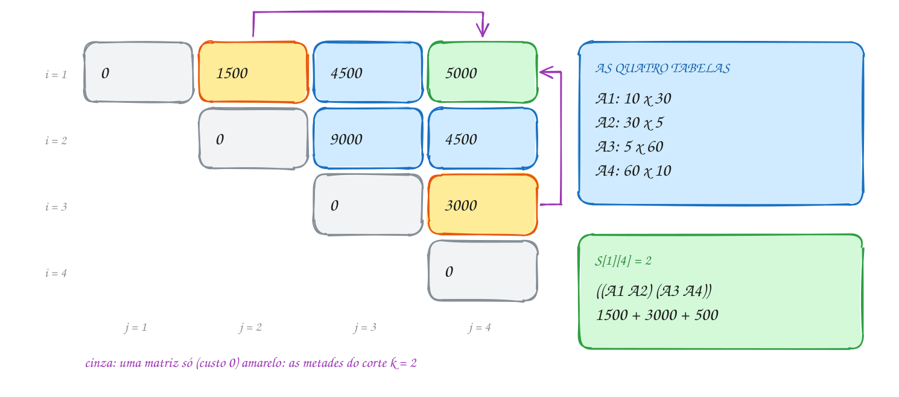
#include <limits.h>
#include <stdio.h>
#define N 4 // quantas matrizes
// A1 é 10x30, A2 é 30x5, A3 é 5x60, A4 é 60x10: Ai tem p[i-1] linhas e p[i] colunas
const int p[N + 1] = {10, 30, 5, 60, 10};
long m[N + 1][N + 1]; // m[i][j]: menor custo para multiplicar Ai..Aj
int s[N + 1][N + 1]; // s[i][j]: onde cortar Ai..Aj na melhor ordem
void parenteses(int i, int j) {
if (i == j) {
printf("A%d", i);
return;
}
printf("(");
parenteses(i, s[i][j]);
printf(" ");
parenteses(s[i][j] + 1, j);
printf(")");
}
int main(void) {
for (int tam = 2; tam <= N; tam++) { // cadeias de 2, depois 3, ...
for (int i = 1; i + tam - 1 <= N; i++) {
int j = i + tam - 1;
m[i][j] = LONG_MAX;
for (int k = i; k < j; k++) { // corta entre Ak e Ak+1
long custo = m[i][k] + m[k + 1][j] + (long)p[i - 1] * p[k] * p[j];
if (custo < m[i][j]) {
m[i][j] = custo;
s[i][j] = k;
}
}
}
}
printf("Tabela m (multiplicações):\n");
for (int i = 1; i <= N; i++) {
for (int j = 1; j <= N; j++) {
if (j < i) printf("%8s", "-");
else printf("%8ld", m[i][j]);
}
printf("\n");
}
printf("Melhor ordem: ");
parenteses(1, N);
printf("\nCusto: %ld multiplicações\n", m[1][N]);
return 0;
}
// Saída:
// Tabela m (multiplicações):
// 0 1500 4500 5000
// - 0 9000 4500
// - - 0 3000
// - - - 0
// Melhor ordem: ((A1 A2) (A3 A4))
// Custo: 5000 multiplicações
São três laços: tamanho da cadeia, início i e corte k, que guarda o
menor:
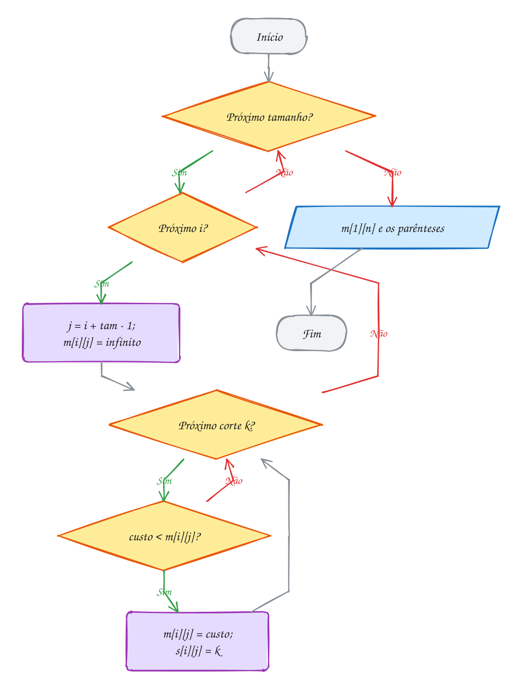
Com p = {10, 30, 5, 60, 10}. Cada linha é uma casa, na ordem em que o
programa preenche; o vencedor está em negrito:
| Casa | Cortes testados (k) | m | s |
|---|---|---|---|
| m[1][2] | k=1: 10·30·5 = 1500 | 1500 | 1 |
| m[2][3] | k=2: 30·5·60 = 9000 | 9000 | 2 |
| m[3][4] | k=3: 5·60·10 = 3000 | 3000 | 3 |
| m[1][3] | k=1: 0 + 9000 + 10·30·60 = 27000; k=2: 1500 + 0 + 10·5·60 = 4500 | 4500 | 2 |
| m[2][4] | k=2: 0 + 3000 + 30·5·10 = 4500; k=3: 9000 + 0 + 30·60·10 = 27000 | 4500 | 2 |
| m[1][4] | k=1: 0 + 4500 + 3000 = 7500; k=2: 1500 + 3000 + 500 = 5000; k=3: 4500 + 0 + 6000 = 10500 | 5000 | 2 |
s[1][4] = 2 corta em (A1 A2)(A3 A4). Da esquerda para a direita, ((A1 A2) A3) A4 custaria 10500; a pior ordem, (A1 (A2 A3)) A4, 33000. O A370
multiplica matrizes reais na ordem ótima.
Exemplo A369 · Quantas ordens existem e quanto custa testar todas
#include <limits.h>
#include <stdio.h>
#define MAXN 16
int p[MAXN + 1];
long chamadas;
// força bruta recursiva: tenta todos os cortes, sem lembrar de nada
long melhor(int i, int j) {
chamadas++;
if (i == j) return 0;
long menor = LONG_MAX;
for (int k = i; k < j; k++) {
long c = melhor(i, k) + melhor(k + 1, j) + (long)p[i - 1] * p[k] * p[j];
if (c < menor) menor = c;
}
return menor;
}
// quantas parentizações diferentes uma cadeia de n matrizes tem
long ordens(int n) {
long t[MAXN + 1] = {0};
t[1] = 1;
for (int m = 2; m <= n; m++)
for (int k = 1; k < m; k++) t[m] += t[k] * t[m - k]; // corte depois da k-ésima
return t[n];
}
int main(void) {
for (int i = 0; i <= MAXN; i++) p[i] = 5 + (i * 7) % 11; // dimensões quaisquer
printf(" n ordens chamadas (força bruta) casas da PD\n");
for (int n = 2; n <= MAXN; n += 2) {
chamadas = 0;
melhor(1, n);
printf("%2d %10ld %22ld %11d\n", n, ordens(n), chamadas, n * (n + 1) / 2);
}
return 0;
}
// Saída:
// n ordens chamadas (força bruta) casas da PD
// 2 1 3 3
// 4 5 27 10
// 6 42 243 21
// 8 429 2187 36
// 10 4862 19683 55
// 12 58786 177147 78
// 14 742900 1594323 105
// 16 9694845 14348907 136
//
// A recursão sem memória recalcula as mesmas cadeias sem parar: as
// chamadas são exatamente 3^(n-1). A PD calcula cada casa m[i][j] uma vez
// só: n(n+1)/2 casas, com no máximo n cortes cada. Para n = 16, 14 milhões
// de chamadas contra 136 casas.
gcc ~/LPEDC/material/A369.c -o ~/LPEDC/material/A369 && ~/LPEDC/material/A369
Exemplo A370 · Multiplicando de verdade e contando
#include <stdio.h>
#include <stdlib.h>
#define N 4
const int p[N + 1] = {10, 30, 5, 60, 10};
long contas = 0; // multiplicações de números feitas de verdade
typedef struct {
int lin, col;
long *v; // lin * col números, linha após linha
} Matriz;
Matriz nova(int lin, int col) {
Matriz m = {lin, col, calloc((size_t)lin * col, sizeof(long))};
if (m.v == NULL) {
fprintf(stderr, "sem memória\n");
exit(1);
}
return m;
}
Matriz multiplica(Matriz a, Matriz b) { // a.col == b.lin
Matriz c = nova(a.lin, b.col);
for (int i = 0; i < a.lin; i++)
for (int j = 0; j < b.col; j++)
for (int k = 0; k < a.col; k++) {
c.v[i * c.col + j] += a.v[i * a.col + k] * b.v[k * b.col + j];
contas++;
}
return c;
}
long soma(Matriz m) {
long s = 0;
for (int i = 0; i < m.lin * m.col; i++) s += m.v[i];
return s;
}
int main(void) {
Matriz a[N + 1];
for (int t = 1; t <= N; t++) { // Ai: p[t-1] x p[t], valores pequenos
a[t] = nova(p[t - 1], p[t]);
for (int i = 0; i < a[t].lin * a[t].col; i++) a[t].v[i] = (i + t) % 3;
}
// ordem ótima da PD: (A1 A2)(A3 A4)
contas = 0;
Matriz x = multiplica(a[1], a[2]), y = multiplica(a[3], a[4]), r1 = multiplica(x, y);
printf("(A1 A2)(A3 A4): %ld multiplicações, soma do resultado %ld\n", contas, soma(r1));
// da esquerda para a direita: ((A1 A2) A3) A4
contas = 0;
Matriz z = multiplica(a[1], a[2]), w = multiplica(z, a[3]), r2 = multiplica(w, a[4]);
printf("((A1 A2) A3) A4: %ld multiplicações, soma do resultado %ld\n", contas, soma(r2));
Matriz todas[] = {x, y, r1, z, w, r2};
for (int i = 0; i < 6; i++) free(todas[i].v);
for (int t = 1; t <= N; t++) free(a[t].v);
return 0;
}
// Saída:
// (A1 A2)(A3 A4): 5000 multiplicações, soma do resultado 986000
// ((A1 A2) A3) A4: 10500 multiplicações, soma do resultado 986000
//
// O resultado é o mesmo (a associatividade garante), e as contas batem com
// a tabela m: 5000 na ordem ótima, 10500 na ordem "natural". Repare também
// na memória: a ordem ruim cria uma intermediária de 10 x 60 (600 números);
// a ótima, uma de 10 x 5 e outra de 5 x 10 (100 números).
gcc ~/LPEDC/material/A370.c -o ~/LPEDC/material/A370 && ~/LPEDC/material/A370
Exercício E1105 · ★☆☆
Três tabelas de uma pesquisa eleitoral: A tem 50 x 10, B tem 10 x 40 e C tem 40 x 30. Escreva a função long custo(int p, int q, int r), que dá o número de multiplicações de uma matriz p x q por uma q x r, e use-a para comparar as duas ordens possíveis de calcular A B C. Mostre qual é a melhor e quantas vezes ela é mais barata (uma casa decimal).
Saída esperada:
(A B) C: 80000 multiplicações
A (B C): 27000 multiplicações
Melhor: A (B C), 3.0 vezes mais barata
Exercício E1107 · ★★☆
O texto preenche a tabela de baixo para cima. Escreva a versão de cima para baixo, com memoização (0138): long custo(int i, int j) segue a recorrência ao pé da letra, mas guarda cada m[i][j] numa tabela memo e devolve direto quando já calculou. Use sete matrizes, p = 8, 20, 4, 15, 6, 25, 10, 12, e conte as chamadas e as casas realmente calculadas.
Saída esperada:
Custo mínimo: 3464
Chamadas com memória: 113
Casas calculadas: 21
Exercício E1108 · ★★☆
Para convencer o chefe de que vale a pena pensar na ordem, o analista quer mostrar a melhor e a PIOR ordem de uma cadeia de cinco matrizes, p = 40, 5, 50, 2, 30, 8. Escreva o programa que preenche duas tabelas ao mesmo tempo (mínimo e máximo, cada uma com o seu s), mostra as duas parentizações com os custos e quantas vezes a pior custa a melhor.
Saída esperada:
Melhor: ((A1 (A2 A3)) (A4 A5)) = 2020
Pior: (((A1 A2) (A3 A4)) A5) = 82600
A pior custa 40.9 vezes a melhor
Exercício E1110 · ★★★
Um colega propõe uma regra gulosa (0133) para fugir da tabela: "olhe os pares vizinhos e multiplique primeiro o mais barato; repita até sobrar uma matriz". Teste a ideia na cadeia p = 10, 20, 5, 40, 30, 2. Escreva:
long guloso(void): mostra cada junção e devolve o total;
long otimo(void): a PD do texto, devolvendo m[1][5].
Saída esperada:
Guloso (junta o par vizinho mais barato):
junta 10x20 com 20x5: 1000
junta 10x5 com 5x40: 2000
junta 40x30 com 30x2: 2400
junta 10x40 com 40x2: 800
Guloso: 6200
PD: 3400
Você organiza o churrasco da firma com cinco condições: alguém precisa levar a churrasqueira, dois colegas brigados não vão juntos, e assim por diante. Um amigo sugere "chama a Ana e o Davi", e conferir se a sugestão atende às cinco condições leva dez segundos. Achar um grupo bom sem palpite nenhum, porém, pode exigir testar todas as combinações de convidados. A pergunta mais famosa da computação gira em torno dessa diferença entre achar uma resposta e conferir uma resposta pronta.
Para comparar problemas, a teoria olha só para problemas de decisão, aqueles cuja resposta é sim ou não: "este grafo tem ciclo hamiltoniano?", "existe rota de no máximo 300 km?". Isso não perde generalidade, porque um problema de otimização ("qual a menor rota?") vira um de decisão quando você fixa um limite e pergunta se dá para ficar abaixo dele. Se a decisão for difícil, a otimização também é (CORMEN et al., 2024, cap. 34).
A classe P reúne os problemas de decisão que se resolvem em tempo polinomial, isto é, com custo O(n^k) para algum k fixo, sendo n o tamanho da entrada. Quase tudo o que você viu no curso está aqui: achar caminho mínimo, testar circuito euleriano (0182), achar pontes (0184). Polinomial é a fronteira que a teoria usa para "rápido": n³ cresce devagar perto de 2ⁿ (CORMEN et al., 2024, cap. 34).
A classe NP exige menos: não pede para resolver, pede para conferir. Um problema está em NP quando toda resposta "sim" tem um certificado, uma prova curta, e existe um verificador, um algoritmo polinomial que recebe a entrada e o certificado e confirma o "sim" (LINTZMAYER; MOTA, 2023). No churrasco, o certificado é a lista de convidados; no ciclo hamiltoniano, é a própria rota, que se confere numa passada. Se você resolve um problema rápido, também confere rápido: basta ignorar o certificado e resolver. Por isso P ⊆ NP.
O nome engana. NP vem de polinomial não determinístico, porque a classe foi definida com uma máquina que "chuta" o certificado certo e depois o confere. Não quer dizer "não polinomial": todo problema de P também está em NP.
Dentro de NP há os problemas mais difíceis da classe. Um problema é NP-difícil quando todo problema de NP se reduz a ele em tempo polinomial; a redução é o assunto do 0187, e por ora basta a ideia de que resolver o NP-difícil rápido resolveria todos os de NP rápido. Um problema é NP-completo quando está em NP e é NP-difícil. A consequência é forte: se um único NP-completo tiver algoritmo polinomial, então P = NP. Ninguém sabe se isso acontece; a maioria dos pesquisadores aposta que P ≠ NP, e a questão segue em aberto (KLEINBERG; TARDOS, 2006, cap. 8). A tabela resume as quatro classes:
| Classe | O que se exige | Exemplos |
|---|---|---|
| P | resolver em tempo polinomial | caminho mínimo, Euler, pontes, MST |
| NP | verificar um "sim" em tempo polinomial | tudo de P, SAT, clique, hamiltoniano |
| NP-completo | estar em NP e ser NP-difícil | SAT, 3-SAT, clique, cobertura de vértices, ciclo hamiltoniano |
| NP-difícil | todo NP se reduz a ele (pode nem estar em NP) | os NP-completos, caixeiro viajante (otimização) |
O primeiro problema provado NP-completo foi o SAT, a satisfatibilidade de
fórmulas lógicas (COOK, 1971). A fórmula vem em forma normal conjuntiva
(FNC): um E de cláusulas, e cada cláusula é um OU de literais, sendo
literal uma variável x ou a negação dela, não x. A pergunta é se existe
uma atribuição de verdadeiro e falso às variáveis que deixe todas as
cláusulas verdadeiras. No churrasco, cada colega é uma variável (vai ou não
vai) e cada condição é uma cláusula. O 3-SAT limita cada cláusula a no
máximo três literais (no Cormen, exatamente três) e continua NP-completo
(KARP, 1972).
Sem algoritmo esperto, resta a força bruta: testar as 2ⁿ atribuições de n
variáveis. Em C, a atribuição cabe num inteiro, a máscara: o bit v - 1
diz se a variável v é verdadeira. Contar a máscara de 0 até 2ⁿ - 1 passa
por todas as atribuições, e cada uma é conferida pelo verificador:
unsigned mascara = 10; // binário 1010
for (int v = 1; v <= 4; v++) {
printf("x%d = %u\n", v, (mascara >> (v - 1)) & 1);
}
// x1 = 0
// x2 = 1
// x3 = 0
// x4 = 1
[!WARNING] NP não quer dizer "não polinomial", e sim polinomial não determinístico. NP-completo é "sem algoritmo polinomial conhecido", não "impossível". E reduzir A a B mostra que B é pelo menos tão difícil quanto A, não o contrário (0187).
Um churrasco da firma com cinco condições sobre Ana, Beto, Caio e Davi. Conferir um palpite é rápido; achar um grupo pode exigir todas as combinações. O palpite falha na quinta cláusula, e a força bruta acha uma atribuição na décima primeira de 16:
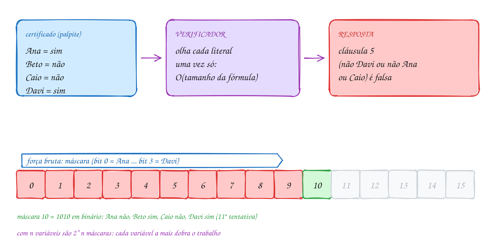
A fórmula é uma matriz de literais +v / -v (como no DIMACS), com zero ao
fim de cada cláusula:
#include <stdbool.h>
#include <stdio.h>
#define NV 4 // variáveis: 1 Ana, 2 Beto, 3 Caio, 4 Davi
#define NC 5 // cláusulas
#define MAXL 3
const char *nomes[NV + 1] = {"", "Ana", "Beto", "Caio", "Davi"};
// cada cláusula é um OU de literais; +v = "v vai", -v = "v não vai"; 0 encerra
const int formula[NC][MAXL + 1] = {
{1, 2, 0}, // Ana ou Beto (alguém precisa levar a churrasqueira)
{-1, -3, 0}, // Ana e Caio brigaram: não os dois
{3, 4, 0}, // Caio ou Davi (alguém faz o carvão pegar)
{-2, 4, 0}, // Beto só vai se Davi for
{-4, -1, 3}, // se Davi e Ana forem, Caio tem que ir
};
// verificador: O(tamanho da fórmula). vai[v] é a atribuição (o certificado)
bool satisfaz(const bool vai[]) {
for (int c = 0; c < NC; c++) {
bool algum = false;
for (int i = 0; i < MAXL && formula[c][i] != 0; i++) {
int lit = formula[c][i];
if ((lit > 0 && vai[lit]) || (lit < 0 && !vai[-lit])) algum = true;
}
if (!algum) return false; // uma cláusula falsa derruba tudo
}
return true;
}
void mostra(const bool vai[]) {
for (int v = 1; v <= NV; v++) printf(" %s=%s", nomes[v], vai[v] ? "sim" : "não");
printf("\n");
}
int main(void) {
bool palpite[NV + 1] = {false, true, false, false, true}; // Ana e Davi
printf("Palpite:");
mostra(palpite);
printf("Verificador: %s\n", satisfaz(palpite) ? "satisfaz" : "não satisfaz");
// força bruta: as 2^n atribuições, como os bits de um contador
long testadas = 0;
for (int mascara = 0; mascara < (1 << NV); mascara++) {
bool vai[NV + 1] = {false};
for (int v = 1; v <= NV; v++) vai[v] = (mascara >> (v - 1)) & 1;
testadas++;
if (satisfaz(vai)) {
printf("Achei depois de %ld de %d tentativas:", testadas, 1 << NV);
mostra(vai);
return 0;
}
}
printf("Insatisfatível: %ld tentativas\n", testadas);
return 0;
}
// Saída:
// Palpite: Ana=sim Beto=não Caio=não Davi=sim
// Verificador: não satisfaz
// Achei depois de 11 de 16 tentativas: Ana=não Beto=sim Caio=não Davi=sim
O fluxograma é o verificador, O(tamanho da fórmula). A força bruta o chama até 2ⁿ vezes:
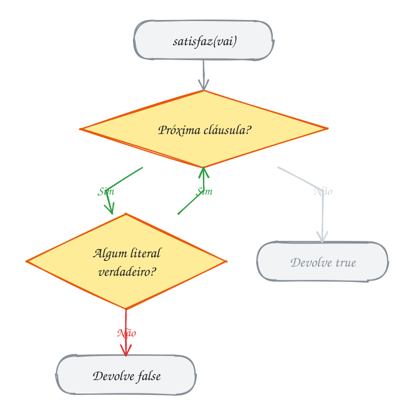
Exemplo A371 · Quanto 2^n cresce
#include <stdbool.h>
#include <stdio.h>
#define MAXN 20
int n; // variáveis em uso
long olhados = 0; // literais examinados pelo verificador
// fórmula insatisfatível de propósito: (x1) e (não x1), mais
// (x1 ou x2 ou ... ou xn); a força bruta precisa testar tudo
bool satisfaz(const bool x[]) {
olhados++;
if (!x[1]) return false; // cláusula (x1)
olhados++;
if (x[1]) return false; // cláusula (não x1)
for (int v = 1; v <= n; v++) {
olhados++;
if (x[v]) return true;
}
return false;
}
int main(void) {
printf(" n atribuições literais olhados\n");
for (n = 4; n <= MAXN; n += 4) {
olhados = 0;
bool achou = false;
for (long m = 0; m < (1L << n) && !achou; m++) {
bool x[MAXN + 1];
for (int v = 1; v <= n; v++) x[v] = (m >> (v - 1)) & 1;
achou = satisfaz(x);
}
printf("%2d %13ld %17ld\n", n, 1L << n, olhados);
}
printf("\nA um bilhão de atribuições por segundo:\n");
double segundos = 1.0;
for (int k = 1; k <= 30; k++) segundos *= 2; // 2^30
printf(" n = 30: %.1f segundo(s)\n", segundos / 1e9);
for (int k = 31; k <= 50; k++) segundos *= 2; // 2^50
printf(" n = 50: %.1f dias\n", segundos / 1e9 / 86400);
for (int k = 51; k <= 70; k++) segundos *= 2; // 2^70
printf(" n = 70: %.0f anos\n", segundos / 1e9 / 86400 / 365);
return 0;
}
// Saída:
// n atribuições literais olhados
// 4 16 24
// 8 256 384
// 12 4096 6144
// 16 65536 98304
// 20 1048576 1572864
//
// A um bilhão de atribuições por segundo:
// n = 30: 1.1 segundo(s)
// n = 50: 13.0 dias
// n = 70: 37436 anos
//
// O verificador é barato (aqui, 1 ou 2 literais por chamada, em média 1,5),
// mas a força bruta o chama 2^n vezes. Somar 4 variáveis multiplica o
// trabalho por 16. Com 70 variáveis (uma escala de plantão pequena), nem
// todos os computadores do mundo juntos dariam conta. É por isso que os
// programas de SAT de verdade cortam caminho com backtracking e
// propagação, e ainda assim existem fórmulas que os derrubam.
gcc ~/LPEDC/material/A371.c -o ~/LPEDC/material/A371 && ~/LPEDC/material/A371
Exemplo A372 · Boletos que fecham o Pix: soma de subconjuntos
#include <stdbool.h>
#include <stdio.h>
#define N 7
const char *boletos[N] = {"luz", "água", "internet", "gás", "condomínio", "celular", "academia"};
const int valor[N] = {186, 66, 99, 115, 420, 49, 89}; // em reais
// verificador: confere um certificado (quais boletos) em O(n)
bool confere(const bool usa[], int alvo) {
int soma = 0;
for (int i = 0; i < N; i++)
if (usa[i]) soma += valor[i];
return soma == alvo;
}
void mostra(const bool usa[]) {
for (int i = 0; i < N; i++)
if (usa[i]) printf(" %s(%d)", boletos[i], valor[i]);
printf("\n");
}
int main(void) {
int pix = 400; // a mãe mandou R$ 400 para pagar contas: quais fecham certinho?
bool palpite[N] = {true, true, true, false, false, true, false}; // luz, água, internet, celular
printf("Palpite:");
mostra(palpite);
printf("Soma bate com R$ %d? %s\n", pix, confere(palpite, pix) ? "sim" : "não");
int tentativas = 0;
for (int m = 0; m < (1 << N); m++) { // todos os 2^7 = 128 subconjuntos
bool usa[N];
for (int i = 0; i < N; i++) usa[i] = (m >> i) & 1;
tentativas++;
if (confere(usa, pix)) {
printf("Achei na tentativa %d:", tentativas);
mostra(usa);
return 0;
}
}
printf("Nenhum grupo fecha R$ %d\n", pix);
return 0;
}
// Saída:
// Palpite: luz(186) água(66) internet(99) celular(49)
// Soma bate com R$ 400? sim
// Achei na tentativa 14: luz(186) internet(99) gás(115)
//
// Dois certificados diferentes para o mesmo "sim". Conferir qualquer um
// custa uma soma; achar um sem palpite custou 14 das 128 tentativas aqui,
// mas no pior caso (quando a resposta é "não") são todas as 2^n. A soma de
// subconjuntos é NP-completa. Quando os valores são pequenos (em reais,
// até alguns milhares), uma PD parecida com a mochila do 0140 resolve em
// O(n · alvo), e isso não contradiz nada: o alvo é um número, e o tamanho
// da entrada é o número de DÍGITOS dele. Um dígito a mais no alvo
// multiplica o trabalho da PD por 10.
gcc ~/LPEDC/material/A372.c -o ~/LPEDC/material/A372 && ~/LPEDC/material/A372
Exercício E1111 · ★☆☆
A padaria decide o fim de semana com três variáveis: x1 = abrir sábado, x2 = abrir domingo, x3 = contratar um folguista. As regras, em FNC:
(x1 ou x2) abre pelo menos um dia
(não x1 ou x3) abrir sábado exige folguista
(não x2 ou x3) abrir domingo também
(não x1 ou não x2 ou não x3) o caixa não fecha com os três
Escreva o verificador int primeira_falsa(const bool x[]), que devolve 0 se a atribuição satisfaz a fórmula ou o número (1 a 4) da primeira cláusula falsa, e a função testa(numero, x), que mostra o resultado. Guarde a fórmula como int formula[4][3] no formato +v / -v, com 0 sobrando nas cláusulas de dois literais. Teste três atribuições (x1, x2, x3): (sim, não, sim), (sim, sim, sim) e (não, sim, não).
Saída esperada:
Atribuição 1: satisfaz
Atribuição 2: não satisfaz (cláusula 4 falsa)
Atribuição 3: não satisfaz (cláusula 3 falsa)
Exercício E1113 · ★★☆
No texto, a força bruta para na primeira atribuição que satisfaz o churrasco. Agora o organizador quer TODAS as opções de grupo. Escreva o programa com a mesma fórmula do texto (Ana, Beto, Caio, Davi; cláusulas {1, 2}, {-1, -3}, {3, 4}, {-2, 4}, {-4, -1, 3}), percorra as 16 máscaras e mostre, numeradas, só os nomes de quem vai em cada grupo válido, além do total.
Saída esperada:
Grupo 1: Beto Davi
Grupo 2: Beto Caio Davi
Total: 2 de 16 atribuições
Exercício E1114 · ★★☆
Colorir um grafo com 3 cores também é NP-completo. A coordenação precisa marcar seis provas em três turnos (manhã, tarde, noite) sem que um aluno tenha duas no mesmo turno. Provas: Cálculo, Física, Química, Algoritmos, Inglês, Desenho (0 a 5). Pares em conflito:
Cálculo-Física, Cálculo-Química, Física-Química, Física-Algoritmos,
Química-Algoritmos, Algoritmos-Inglês, Cálculo-Inglês, Inglês-Desenho,
Algoritmos-Desenho
Escreva:
1. o verificador bool valida(const int turno[]), que mostra o primeiro
conflito que achar (pares a < b em ordem) e devolve false;
2. teste o palpite da coordenação: turnos 0, 1, 2, 0, 1, 0;
3. a força bruta pelas 3^6 = 729 escalas, contando em base 3 (o
algarismo p do código é o turno da prova p), parando na primeira
válida.
Saída esperada:
Palpite da coordenação:
conflito: Algoritmos e Desenho de manhã
inválido
Primeira escala válida (tentativa 141):
Cálculo: noite
Física: tarde
Química: manhã
Algoritmos: noite
Inglês: tarde
Desenho: manhã
Exercício E1115 · ★★★
Por que 3-SAT é tão difícil quanto SAT? Porque toda cláusula longa vira cláusulas de 3 literais com variáveis novas, sem mudar a resposta. A cláusula (x1 ou x2 ou x3 ou x4 ou x5) vira:
(x1 ou x2 ou y1) (não y1 ou x3 ou y2) (não y2 ou x4 ou x5)
Escreva o programa que:
1. gera essas K - 2 cláusulas para K = 5 numa matriz int nova[3][3]
(literais 1 a 5 são x1..x5; 6 e 7 são y1 e y2) e as mostra;
2. confere a equivalência por força bruta: para cada uma das 32
atribuições dos x, a cláusula original é verdadeira exatamente
quando EXISTE uma escolha de y1, y2 que satisfaz as três novas.
Saída esperada:
(x1 ou x2 ou y1)
(não y1 ou x3 ou y2)
(não y2 ou x4 ou x5)
Equivalentes em 32 de 32 atribuições dos x
A síndica quer montar a maior comissão possível no condomínio sem nenhum par de moradores que já brigou. O sobrinho dela tem um programa que acha o maior grupo de amigos numa rede social, um grupo em que todo mundo conhece todo mundo. Os dois problemas parecem diferentes, mas o programa do sobrinho serve para a síndica, desde que ela traduza a pergunta dela para a linguagem dele. Essa tradução se chama redução, e ela é a ferramenta que separa os problemas fáceis dos difíceis.
Uma redução polinomial de um problema A para um problema B, escrita A ≤p B, é um algoritmo de tempo polinomial que transforma qualquer instância de A numa instância de B com a mesma resposta: se a de A é "sim", a de B também é, e vice-versa. Com ela, quem sabe resolver B resolve A: traduz a entrada, roda o programa de B e devolve a resposta. Por isso A ≤p B quer dizer que A não é mais difícil que B (CORMEN et al., 2024, cap. 34).
A redução tem dois usos, em sentidos opostos. O primeiro é prático: resolver A quando você já tem um programa para B, como a síndica com o programa do sobrinho. O segundo é teórico: provar dificuldade. Se A é NP-difícil e A ≤p B, então B também é NP-difícil, porque um algoritmo rápido para B daria, pela tradução, um algoritmo rápido para A (LINTZMAYER; MOTA, 2023). É assim que a lista de problemas NP-completos cresceu desde o SAT: cada novo membro entra por uma redução a partir de um já conhecido.
Três problemas de grafo aparecem juntos o tempo todo. Um conjunto independente é um conjunto de vértices sem nenhuma aresta entre eles: a comissão sem brigas, se cada briga for uma aresta. Uma clique é o oposto, um conjunto de vértices com todas as arestas possíveis entre eles: o grupo de amigos. Uma cobertura de vértices é um conjunto de vértices que toca toda aresta, isto é, toda aresta tem pelo menos uma ponta no conjunto. Na versão de decisão ("existe um de tamanho k?"), os três são NP-completos (KARP, 1972).
A ponte entre eles é o complemento de um grafo G: um grafo com os mesmos
vértices e com aresta exatamente entre os pares que G não liga. No
condomínio, G é o grafo das brigas, e o complemento é o grafo da paz. Um
conjunto S sem nenhuma briga dentro dele é um conjunto em que todo par está
em paz. Logo, S é independente em G se e só se S é uma clique no
complemento. Montar o complemento é percorrer os V² pares da matriz de
adjacência: custo O(V²), polinomial (CORMEN et al., 2024, cap. 34). Em C,
com a matriz briga, a linha que monta o complemento é paz[a][b] = a != b && !briga[a][b].
A cobertura entra pelo mesmo raciocínio. Se S é independente em G, nenhuma
aresta tem as duas pontas em S, então toda aresta tem pelo menos uma ponta
fora de S, em V − S. Logo V − S é uma cobertura de G, e a volta também
vale. Juntando: existe independente de tamanho k em G se e só se existe clique
de tamanho k no complemento, se e só se existe cobertura de tamanho V − k em
G. Com conjuntos guardados como máscaras de bits, o complemento de um conjunto
é todos & ~comissao, com todos = (1 << V) - 1.
Uma redução mais engenhosa leva do 3-SAT (0186) à clique. Cada cláusula da
fórmula vira um grupo de vértices, um vértice por literal. Ligue dois
vértices quando estão em cláusulas diferentes e não se contradizem, isto
é, um não é x enquanto o outro é não x. Uma clique com um vértice de cada
cláusula escolhe, em cada cláusula, um literal que pode ser verdadeiro sem
conflito com os outros escolhidos. Tornar verdadeiros esses literais satisfaz
a fórmula; e uma atribuição que satisfaz a fórmula dá essa clique. Como o
3-SAT é NP-completo, a clique também é (CORMEN et al., 2024, cap. 34).
[!WARNING] A pegadinha é o sentido. Para provar que X é difícil, reduza um difícil conhecido a X. Reduzir X a SAT só mostra que X não é mais difícil que SAT. E a redução precisa ser polinomial.
Uma síndica quer a maior comissão sem nenhum par que já brigou, e o sobrinho tem um programa que acha o maior grupo de amigos. À esquerda, G e a maior comissão; no meio, o complemento, em que ela vira clique; à direita, os outros três são a cobertura:
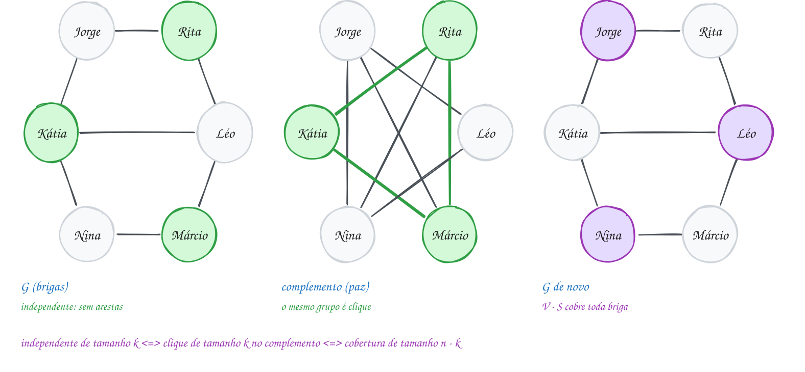
A força bruta de clique é a caixa-preta; a redução é a montagem de
paz:
#include <stdbool.h>
#include <stdio.h>
#define V 6
const char *moradores[V] = {"Jorge", "Rita", "Kátia", "Léo", "Márcio", "Nina"};
int briga[V][V]; // G: aresta = os dois brigaram
int paz[V][V]; // complemento de G: aresta = não brigaram
// a "caixa-preta": maior clique por força bruta (devolve a máscara)
int maior_clique(int g[V][V]) {
int melhor = 0, tam_melhor = 0;
for (int m = 1; m < (1 << V); m++) {
bool ok = true;
int tam = 0;
for (int a = 0; a < V; a++) {
if (!(m >> a & 1)) continue;
tam++;
for (int b = a + 1; b < V; b++)
if ((m >> b & 1) && !g[a][b]) ok = false;
}
if (ok && tam > tam_melhor) melhor = m, tam_melhor = tam;
}
return melhor;
}
void mostra(const char *rotulo, int m) {
int tam = 0;
printf("%s:", rotulo);
for (int v = 0; v < V; v++)
if (m >> v & 1) printf(" %s", moradores[v]), tam++;
printf(" (%d)\n", tam);
}
int main(void) {
int brigas[][2] = {{0, 1}, {0, 2}, {1, 3}, {2, 3}, {3, 4}, {4, 5}, {2, 5}};
for (int k = 0; k < 7; k++) briga[brigas[k][0]][brigas[k][1]] = briga[brigas[k][1]][brigas[k][0]] = 1;
// a redução: montar o complemento custa O(V²)
for (int a = 0; a < V; a++)
for (int b = 0; b < V; b++) paz[a][b] = a != b && !briga[a][b];
int comissao = maior_clique(paz); // clique no complemento...
mostra("Comissão sem brigas", comissao); // ...é conjunto independente em G
int todos = (1 << V) - 1;
mostra("Mediadores (cobertura)", todos & ~comissao); // o resto cobre toda briga
return 0;
}
// Saída:
// Comissão sem brigas: Rita Kátia Márcio (3)
// Mediadores (cobertura): Jorge Léo Nina (3)
Os três passos de toda redução: transformar a entrada, chamar o resolvedor do outro problema e traduzir a resposta:
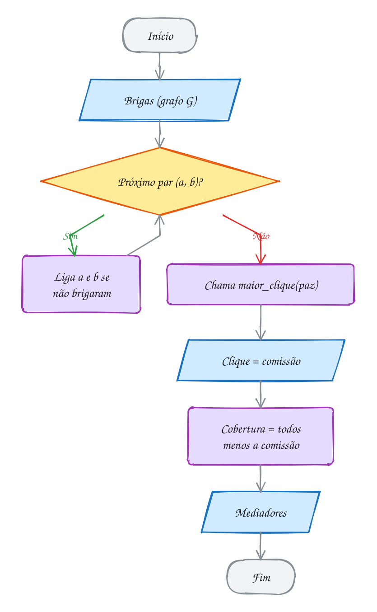
Exemplo A373 · De 3-SAT para clique: a construção em C
#include <stdbool.h>
#include <stdio.h>
#define M 3 // cláusulas
#define NV 3 // variáveis
#define V (3 * M) // um vértice por literal
// (x1 ou não x2 ou x3) e (não x1 ou x2 ou x3) e (x1 ou x2 ou não x3)
const int formula[M][3] = {{1, -2, 3}, {-1, 2, 3}, {1, 2, -3}};
int lit[V]; // o literal de cada vértice
int adj[V][V];
void mostra_lit(int l) {
printf("%sx%d", l < 0 ? "não " : "", l < 0 ? -l : l);
}
int main(void) {
// a redução: O(m²) vértices e arestas, polinomial
for (int c = 0; c < M; c++)
for (int i = 0; i < 3; i++) lit[3 * c + i] = formula[c][i];
int arestas = 0;
for (int a = 0; a < V; a++)
for (int b = a + 1; b < V; b++) {
bool outra_clausula = a / 3 != b / 3;
bool compativel = lit[a] != -lit[b]; // x e não x nunca se ligam
if (outra_clausula && compativel) adj[a][b] = adj[b][a] = 1, arestas++;
}
printf("Grafo: %d vértices, %d arestas\n", V, arestas);
// clique de tamanho M: no máximo um vértice por cláusula, então basta
// escolher um literal de cada uma (3^M escolhas)
for (int esc = 0; esc < 27; esc++) {
int v[M], r = esc;
for (int c = 0; c < M; c++) v[c] = 3 * c + r % 3, r /= 3;
bool clique = true;
for (int i = 0; i < M; i++)
for (int j = i + 1; j < M; j++)
if (!adj[v[i]][v[j]]) clique = false;
if (!clique) continue;
printf("Clique:");
for (int c = 0; c < M; c++) printf(" v%d(", v[c]), mostra_lit(lit[v[c]]), printf(")");
bool valor[NV + 1] = {false}; // variável não citada fica falsa
for (int c = 0; c < M; c++)
if (lit[v[c]] > 0) valor[lit[v[c]]] = true;
printf("\nAtribuição:");
for (int x = 1; x <= NV; x++) printf(" x%d=%s", x, valor[x] ? "V" : "F");
printf("\n");
return 0;
}
printf("Sem clique de tamanho %d: fórmula insatisfatível\n", M);
return 0;
}
// Saída:
// Grafo: 9 vértices, 21 arestas
// Clique: v0(x1) v4(x2) v6(x1)
// Atribuição: x1=V x2=V x3=F
//
// Dos 27 pares entre cláusulas diferentes, só 6 são contraditórios (x e
// não x) e ficam de fora: sobram 21 arestas. A clique escolhe um literal
// por cláusula sem contradição; tornar esses literais verdadeiros satisfaz
// as três cláusulas. A volta também vale: de uma atribuição que satisfaz,
// pegue um literal verdadeiro por cláusula e eles formam uma clique. Por
// isso "a fórmula é satisfatível" e "o grafo tem clique de tamanho m" têm
// sempre a mesma resposta.
gcc ~/LPEDC/material/A373.c -o ~/LPEDC/material/A373 && ~/LPEDC/material/A373
Exemplo A374 · Caminho hamiltoniano usando quem só sabe achar ciclo
#include <stdbool.h>
#include <stdio.h>
#define MAXV 8
int n;
int adj[MAXV][MAXV];
int rota[MAXV];
bool usado[MAXV];
// a caixa-preta: acha ciclo hamiltoniano (backtracking do 0183)
bool ciclo(int pos) {
if (pos == n) return adj[rota[n - 1]][rota[0]];
for (int v = 1; v < n; v++) {
if (!adj[rota[pos - 1]][v] || usado[v]) continue;
rota[pos] = v;
usado[v] = true;
if (ciclo(pos + 1)) return true;
usado[v] = false;
}
return false;
}
bool tem_ciclo(void) {
for (int v = 0; v < n; v++) usado[v] = false;
rota[0] = 0;
usado[0] = true;
return ciclo(1);
}
int main(void) {
const char *pontos[MAXV] = {"Mirante", "Cachoeira", "Gruta", "Lagoa", "Pedra", "X"};
n = 5; // a gravata do A365
int trechos[][2] = {{0, 1}, {1, 2}, {2, 0}, {0, 3}, {3, 4}, {4, 0}};
for (int k = 0; k < 6; k++) adj[trechos[k][0]][trechos[k][1]] = adj[trechos[k][1]][trechos[k][0]] = 1;
printf("Ciclo hamiltoniano na gravata: %s\n", tem_ciclo() ? "sim" : "não");
// a redução: um vértice novo X ligado a todos
int x = n++;
for (int v = 0; v < x; v++) adj[x][v] = adj[v][x] = 1;
if (!tem_ciclo()) {
printf("Sem caminho hamiltoniano\n");
return 0;
}
int ix = 0; // onde o X caiu no ciclo
while (rota[ix] != x) ix++;
printf("Ciclo com o X:");
for (int i = 0; i < n; i++) printf(" %s", pontos[rota[i]]);
printf("\nCaminho (corta o X):");
for (int i = 1; i < n; i++) printf(" %s", pontos[rota[(ix + i) % n]]);
printf("\n");
return 0;
}
// Saída:
// Ciclo hamiltoniano na gravata: não
// Ciclo com o X: Mirante Cachoeira Gruta X Lagoa Pedra
// Caminho (corta o X): Lagoa Pedra Mirante Cachoeira Gruta
//
// O grafo novo tem ciclo hamiltoniano exatamente quando o original tem
// caminho hamiltoniano: o X entra pela ponta final do caminho e sai pela
// inicial, porque está ligado a todos. A redução custa O(V): um vértice e
// V arestas. Ela mostra que CAMINHO <=p CICLO; como caminho hamiltoniano é
// NP-completo, ciclo hamiltoniano também é NP-difícil.
gcc ~/LPEDC/material/A374.c -o ~/LPEDC/material/A374 && ~/LPEDC/material/A374
Exercício E1117 · ★☆☆
Num torneio de várzea todos devem jogar contra todos. Cinco times (Azul, Verde, Rubro, Preto, Branco; 0 a 4) já fizeram estes jogos:
Azul x Verde, Azul x Rubro, Verde x Preto, Rubro x Preto,
Preto x Branco, Azul x Branco
Os jogos que faltam são exatamente as arestas do grafo complemento. Escreva void complemento(int g[V][V], int c[V][V]) e use-a para mostrar os jogos que faltam (pares a < b) e a conta de conferência.
Saída esperada:
Jogos que faltam:
Azul x Preto
Verde x Rubro
Verde x Branco
Rubro x Branco
6 jogos feitos + 4 faltando = 10
Exercício E1119 · ★★☆
O shopping vai abrir um corredor temático e quer o MAIOR grupo de lojas sem concorrência entre si (um conjunto independente). Resolva por redução a clique: escreva int maior_clique(int g[V][V]), que testa as máscaras de bits de 1 a 2^V - 1 e devolve a da maior clique (no empate, a primeira máscara), monte o complemento de concorre em g2, chame maior_clique e mostre as lojas escolhidas e quantas são.
Lojas: Açaí, Bazar, Café, Doces, Ervas, Farmácia, Gelato (0 a 6). Concorrem: Açaí-Café, Açaí-Doces, Açaí-Gelato, Bazar-Ervas, Café-Gelato, Doces-Gelato, Ervas-Farmácia, Farmácia-Gelato.
Saída esperada:
Lojas no corredor: Bazar Café Doces Farmácia (4)
Exercício E1120 · ★★☆
Generalize a construção do A373. Escreva a função void reduz(const char *nome, int m, const int f[][3]), que recebe uma fórmula 3-CNF com m cláusulas, monta o grafo da redução (um vértice por literal, aresta entre literais de cláusulas diferentes que não se contradizem), conta vértices e arestas e procura uma clique com um vértice de cada cláusula. Teste nas duas fórmulas:
F1: (x1 ou x2 ou x3) (não x1 ou não x2 ou x3)
(x1 ou não x2 ou não x3) (não x1 ou x2 ou não x3)
F2: as 8 cláusulas possíveis com x1, x2, x3 (cada uma com ou sem "não")
Saída esperada:
F1: 12 vértices, 42 arestas, clique de 4? sim (satisfatível)
F2: 24 vértices, 204 arestas, clique de 8? não (insatisfatível)
Exercício E1122 · ★★★
Reduza 3-COLORAÇÃO a SAT: transforme um grafo numa fórmula que é satisfatível exatamente quando o grafo pode ser pintado com 3 cores sem vizinhos iguais. Use a variável var(v, c) = 3v + c + 1 para "o vértice v tem a cor c" (cores 0 vermelho, 1 verde, 2 azul) e três tipos de cláusula, nesta ordem:
para cada vértice v: (v tem cor 0 ou cor 1 ou cor 2)
e, para cada par de cores a < b, (não a ou não b)
para cada aresta u-v e cada cor c: (não u tem c ou não v tem c)
Depois resolva a fórmula por força bruta (2^12 atribuições) e traduza a primeira solução de volta para cores. Teste o losango (0-1, 0-2, 1-2, 1-3, 2-3) e o completo K4 (todas as 6 arestas entre 0, 1, 2, 3).
Saída esperada:
Losango: 12 variáveis, 31 cláusulas
vértice 0: vermelho
vértice 1: azul
vértice 2: verde
vértice 3: vermelho
Completo K4: 12 variáveis, 34 cláusulas
sem 3-coloração
O 0186 deixou uma notícia ruim: para os problemas NP-difíceis, ninguém conhece algoritmo que ache a resposta ótima em tempo polinomial. Só que o problema continua lá, todo dia. O dono do barco de Manaus a Parintins precisa decidir hoje como distribuir as cargas pelas viagens, e não pode esperar a força bruta testar todas as combinações. Ele aceita uma resposta um pouco pior que a melhor, desde que saia rápido e venha com uma garantia de quanto pior ela pode ser.
Essa é a ideia do algoritmo de aproximação: um algoritmo de tempo polinomial que, num problema de minimização, devolve uma solução de custo no máximo ρ vezes o ótimo, em qualquer entrada. O número ρ é o fator de aproximação. Um algoritmo 2-aproximado nunca gasta mais que o dobro do ótimo, por pior que seja a entrada (CORMEN et al., 2024, cap. 35). Repare no truque da prova: o algoritmo não conhece o ótimo, então a análise compara a solução dele com um limite inferior do ótimo, um valor que nenhuma solução consegue ficar abaixo.
O problema do barco é o bin packing (empacotamento em caixas): guardar itens de tamanhos dados no menor número de caixas de capacidade C. É NP-difícil. O limite inferior sai de uma conta simples: a soma dos tamanhos dividida por C, arredondada para cima. Se as cargas somam 45 toneladas e o barco leva 10, nenhuma solução faz menos que 5 viagens (KLEINBERG; TARDOS, 2006, cap. 11).
O guloso mais simples é o first fit (FF, primeira que cabe): cada item, na ordem em que chega, vai para a primeira caixa aberta em que ele cabe; se não cabe em nenhuma, abre uma caixa nova. A garantia vem de uma observação: no fim, nunca sobram duas caixas ocupadas até a metade ou menos, porque o conteúdo da segunda teria cabido na primeira. Então quase todas as caixas estão mais que meio cheias, e o FF usa no máximo o dobro do ótimo. Uma análise mais fina baixa esse fator para cerca de 1,7 (KLEINBERG; TARDOS, 2006, cap. 11).
O first fit decrescente (FFD) ordena os itens do maior para o menor antes de aplicar o mesmo guloso. Os itens grandes, que são os difíceis de encaixar, entram primeiro, e os pequenos preenchem as sobras. A garantia melhora para cerca de 11/9 do ótimo, mais uma constante pequena.
A cobertura de vértices do 0187 tem um 2-aproximado curto: enquanto houver
uma aresta u-v sem nenhuma ponta na cobertura, ponha as duas pontas
nela. O porquê do fator 2: as arestas que o algoritmo escolhe não têm ponta em
comum, já que, depois de escolher u-v, toda aresta que toca u ou v fica
coberta. Qualquer cobertura, inclusive a ótima, precisa de pelo menos uma
ponta de cada uma dessas arestas. O algoritmo pega duas por aresta, então
usa no máximo o dobro (CORMEN et al., 2024, cap. 35).
O caixeiro viajante pede o ciclo mais curto que passa por todas as cidades. Na versão métrica, as distâncias obedecem à desigualdade triangular: ir direto de A a C nunca é mais longo que passar por B. Com essa hipótese existe um 2-aproximado: monte a árvore geradora mínima (Prim, 0153), percorra-a em pré-ordem e volte ao começo. A árvore custa menos que o ciclo ótimo, porque tirar uma aresta do ciclo deixa uma árvore. Contornar a árvore passa duas vezes por cada aresta, o dobro do custo dela, e pular as cidades repetidas só encurta, pela desigualdade triangular. Sem essa desigualdade, nenhum fator constante é possível, a menos que P = NP (CORMEN et al., 2024, cap. 35).
[!WARNING] "Aproximado" não é "chute": o fator vale para toda entrada e vem com prova. E o guloso "pega o vértice de maior grau" para cobertura não tem fator constante; o 2-aproximado é o "pega as duas pontas".
Um barco de Manaus a Parintins leva 10 toneladas por viagem e recebe oito cargas: 4, 4, 6, 9, 2, 6, 7 e 7. Em cima, o first fit na ordem de chegada; embaixo, o decrescente, que bate o limite inferior de 5 viagens:
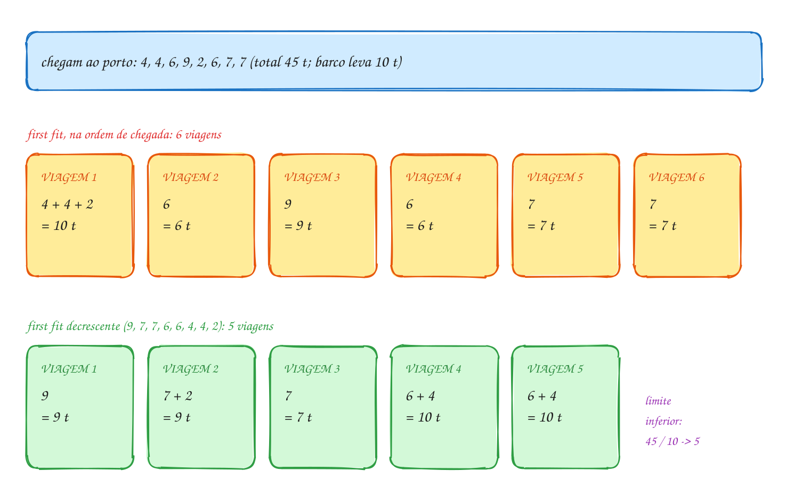
#include <stdio.h>
#include <stdlib.h>
#define N 8
#define CAPACIDADE 10 // toneladas por viagem do barco
int compara_desc(const void *a, const void *b) {
return *(const int *)b - *(const int *)a;
}
// first fit: cada carga vai para a PRIMEIRA viagem em que ainda cabe
int first_fit(const int carga[], int n, int viagem[][N], int qtd[]) {
int livre[N], viagens = 0;
for (int i = 0; i < n; i++) {
int v = 0;
while (v < viagens && livre[v] < carga[i]) v++;
if (v == viagens) livre[viagens++] = CAPACIDADE, qtd[v] = 0; // abre outra viagem
livre[v] -= carga[i];
viagem[v][qtd[v]++] = carga[i];
}
return viagens;
}
void mostra(const char *nome, int viagens, int viagem[][N], const int qtd[]) {
printf("%s: %d viagens\n", nome, viagens);
for (int v = 0; v < viagens; v++) {
int soma = 0;
printf(" viagem %d:", v + 1);
for (int i = 0; i < qtd[v]; i++) printf(" %d", viagem[v][i]), soma += viagem[v][i];
printf(" (%d t)\n", soma);
}
}
int main(void) {
int carga[N] = {4, 4, 6, 9, 2, 6, 7, 7}; // na ordem em que chegam ao porto
int viagem[N][N], qtd[N];
int total = 0;
for (int i = 0; i < N; i++) total += carga[i];
printf("Total: %d t; limite inferior: %d viagens\n", total, (total + CAPACIDADE - 1) / CAPACIDADE);
int ff = first_fit(carga, N, viagem, qtd);
mostra("First fit", ff, viagem, qtd);
qsort(carga, N, sizeof carga[0], compara_desc); // maiores primeiro
int ffd = first_fit(carga, N, viagem, qtd);
mostra("First fit decrescente", ffd, viagem, qtd);
return 0;
}
// Saída:
// Total: 45 t; limite inferior: 5 viagens
// First fit: 6 viagens
// viagem 1: 4 4 2 (10 t)
// viagem 2: 6 (6 t)
// viagem 3: 9 (9 t)
// viagem 4: 6 (6 t)
// viagem 5: 7 (7 t)
// viagem 6: 7 (7 t)
// First fit decrescente: 5 viagens
// viagem 1: 9 (9 t)
// viagem 2: 7 2 (9 t)
// viagem 3: 7 (7 t)
// viagem 4: 6 4 (10 t)
// viagem 5: 6 4 (10 t)
O first fit para uma carga procura a primeira viagem com espaço ou abre uma nova. Custa O(n²) no pior caso:
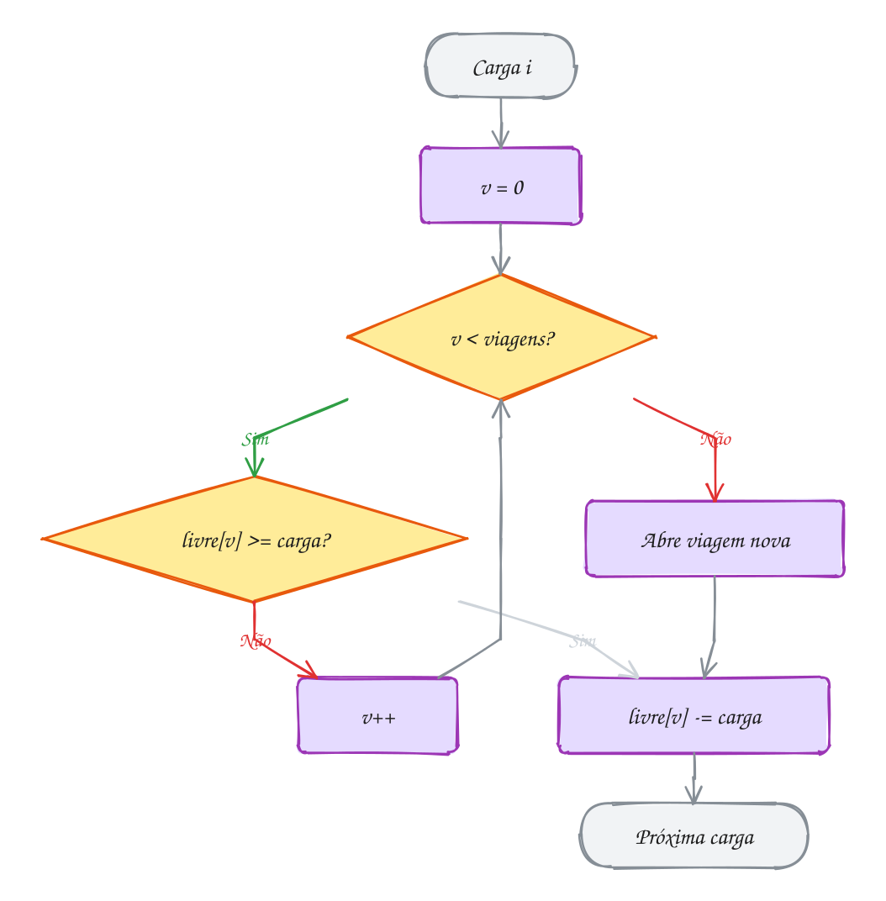
Exemplo A375 · Cobertura de vértices: as duas pontas contra o ótimo
#include <stdbool.h>
#include <stdio.h>
#define V 8
#define E 9
// corredores de um galpão (arestas) entre os pontos 0 a 7; um segurança num
// ponto vigia todos os corredores que chegam nele
const int corredor[E][2] = {{0, 1}, {1, 2}, {2, 3}, {3, 4}, {4, 5}, {5, 6}, {6, 7}, {1, 6}, {2, 5}};
int main(void) {
// 2-aproximado: pega uma aresta descoberta e põe as DUAS pontas
bool aprox[V] = {false};
int tam_aprox = 0;
printf("Arestas escolhidas:");
for (int k = 0; k < E; k++) {
int a = corredor[k][0], b = corredor[k][1];
if (aprox[a] || aprox[b]) continue; // já coberta
printf(" %d-%d", a, b);
aprox[a] = aprox[b] = true;
tam_aprox += 2;
}
printf("\nAproximado: %d seguranças em", tam_aprox);
for (int v = 0; v < V; v++)
if (aprox[v]) printf(" %d", v);
// ótimo por força bruta: 2^8 subconjuntos
int melhor = V + 1, mascara_otima = 0;
for (int m = 0; m < (1 << V); m++) {
bool cobre = true;
for (int k = 0; k < E && cobre; k++)
if (!(m >> corredor[k][0] & 1) && !(m >> corredor[k][1] & 1)) cobre = false;
int tam = 0;
for (int v = 0; v < V; v++) tam += m >> v & 1;
if (cobre && tam < melhor) melhor = tam, mascara_otima = m;
}
printf("\nÓtimo: %d seguranças em", melhor);
for (int v = 0; v < V; v++)
if (mascara_otima >> v & 1) printf(" %d", v);
printf("\nRazão: %.2f (a garantia é 2)\n", (double)tam_aprox / melhor);
return 0;
}
// Saída:
// Arestas escolhidas: 0-1 2-3 4-5 6-7
// Aproximado: 8 seguranças em 0 1 2 3 4 5 6 7
// Ótimo: 4 seguranças em 0 2 4 6
// Razão: 2.00 (a garantia é 2)
//
// Aqui o aproximado bate exatamente no pior caso: as quatro arestas
// escolhidas não têm ponta em comum (formam um emparelhamento), e o ótimo
// precisa de pelo menos uma ponta de cada uma, ou seja, pelo menos 4. O
// aproximado põe as duas pontas: 8 = 2 x 4. Ele nunca passa disso, mas
// também não faz melhor quando o emparelhamento é "perfeito" assim.
// Custo: O(E) contra O(2^V · E) da força bruta.
gcc ~/LPEDC/material/A375.c -o ~/LPEDC/material/A375 && ~/LPEDC/material/A375
Exemplo A376 · Caixeiro viajante métrico: a árvore mínima vira rota
#include <stdbool.h>
#include <stdio.h>
#include <stdlib.h>
#define N 6
// pontos de uma cidade em quarteirões (x, y); distância = quarteirões andados
const char *pontos[N] = {"Loja", "Ana", "Bia", "Caio", "Davi", "Elis"};
const int px[N] = {0, 5, 2, 1, 7, 4};
const int py[N] = {0, 4, 4, 4, 2, 0};
int d[N][N];
int pai[N]; // pai na árvore geradora mínima
int rota[N], tam_rota = 0;
void preordem(int u) { // visita u e depois os filhos, em ordem de índice
rota[tam_rota++] = u;
for (int v = 0; v < N; v++)
if (v != u && pai[v] == u) preordem(v);
}
int custo(const int r[]) {
int c = 0;
for (int i = 0; i < N; i++) c += d[r[i]][r[(i + 1) % N]];
return c;
}
int melhor = 1 << 30, atual[N];
bool usado[N];
void forca_bruta(int pos, int acum) { // todas as rotas que começam na Loja
if (acum >= melhor) return;
if (pos == N) {
if (acum + d[atual[N - 1]][0] < melhor) melhor = acum + d[atual[N - 1]][0];
return;
}
for (int v = 1; v < N; v++) {
if (usado[v]) continue;
usado[v] = true;
atual[pos] = v;
forca_bruta(pos + 1, acum + d[atual[pos - 1]][v]);
usado[v] = false;
}
}
int main(void) {
for (int a = 0; a < N; a++)
for (int b = 0; b < N; b++) d[a][b] = abs(px[a] - px[b]) + abs(py[a] - py[b]);
// Prim O(N²) a partir da Loja
int chave[N];
bool na_arvore[N] = {false};
for (int v = 0; v < N; v++) chave[v] = 1 << 30, pai[v] = -1;
chave[0] = 0;
int peso_arvore = 0;
for (int k = 0; k < N; k++) {
int u = -1;
for (int v = 0; v < N; v++)
if (!na_arvore[v] && (u == -1 || chave[v] < chave[u])) u = v;
na_arvore[u] = true;
peso_arvore += chave[u];
for (int v = 0; v < N; v++)
if (!na_arvore[v] && d[u][v] < chave[v]) chave[v] = d[u][v], pai[v] = u;
}
preordem(0);
printf("Árvore mínima: %d quarteirões\nRota aproximada:", peso_arvore);
for (int i = 0; i < N; i++) printf(" %s", pontos[rota[i]]);
printf(" %s = %d quarteirões\n", pontos[0], custo(rota));
atual[0] = 0;
usado[0] = true;
forca_bruta(1, 0);
printf("Ótimo (força bruta): %d quarteirões\n", melhor);
printf("Garantia: rota <= 2 x árvore = %d\n", 2 * peso_arvore);
return 0;
}
// Saída:
// Árvore mínima: 17 quarteirões
// Rota aproximada: Loja Elis Ana Bia Caio Davi Loja = 30 quarteirões
// Ótimo (força bruta): 22 quarteirões
// Garantia: rota <= 2 x árvore = 34
//
// A distância em quarteirões (|dx| + |dy|) respeita a desigualdade
// triangular, então a garantia vale: 30 <= 2 x 17 = 34 <= 2 x 22. A rota
// saiu 36% acima do ótimo, longe do dobro. Repare na volta Davi -> Loja:
// a pré-ordem termina longe de casa, e é aí que mora a perda. A árvore
// (17) é sempre menor que o ótimo (22), porque apagar uma aresta da rota
// ótima deixa uma árvore geradora.
gcc ~/LPEDC/material/A376.c -o ~/LPEDC/material/A376 && ~/LPEDC/material/A376
Exercício E1123 · ★☆☆
Um barco menor só tem um porão aberto por vez: se a carga não cabe na viagem atual, ela parte e abre-se outra (não dá para voltar a uma viagem anterior). Isso é o NEXT FIT. Escreva int next_fit(const int carga[], int n) e compare com o first fit do texto e com o limite inferior, para as cargas 6, 5, 6, 5, 1, 7, 2, 2, 5, 4 (capacidade 10).
Saída esperada:
Limite inferior: 5 viagens
Next fit: 7 viagens
First fit: 5 viagens
Exercício E1125 · ★★☆
Considere as câmeras de uma cidade (esquinas A a G; ruas A-B, B-C, C-D, D-E, E-F, F-G, B-F, C-E). Escreva a cobertura 2-aproximada do texto como função int cobertura(int rua[E][2], bool em[]), que examina as ruas na ordem do vetor, e uma força bruta int otimo(int rua[E][2]). Rode a aproximação com duas ordens das mesmas ruas:
ordem 1: A-B, B-C, C-D, D-E, E-F, F-G, B-F, C-E
ordem 2: B-F, C-E, A-B, B-C, C-D, D-E, E-F, F-G
Saída esperada:
Ordem 1: 6 câmeras em A B C D E F
Ordem 2: 4 câmeras em B C E F
Ótimo: 4 câmeras
Exercício E1126 · ★★☆
Compare o first fit (FF) e o first fit decrescente (FFD) em três listas de cargas (barco de 10 t), sem estragar a lista original. Escreva a função compara(nome, carga, n), que copia a lista com memcpy, ordena a cópia em ordem decrescente com qsort e mostra FF, FFD e o limite inferior.
Lista 1: 4, 4, 6, 9, 2, 6, 7, 7
Lista 2: 2, 2, 2, 2, 2, 2, 7, 7, 7, 7, 7, 7
Lista 3: 3, 3, 3, 3, 3, 3, 4, 4, 4, 4, 4, 4, 5
Saída esperada:
Lista 1: FF 6, FFD 5, limite 5
Lista 2: FF 7, FFD 6, limite 6
Lista 3: FF 6, FFD 6, limite 5
Exercício E1127 · ★★★
Escreva a 2-aproximação do caixeiro viajante métrico para um passeio turístico com sete pontos (coordenadas em quarteirões; a distância é |dx| + |dy|). O programa deve:
- montar a matriz d de distâncias;
- rodar o Prim O(N²) a partir da Base, guardando pai[] (no empate,
vale o menor índice);
- void preordem(int u): a rota é a pré-ordem da árvore (u primeiro,
depois os filhos de u em ordem de índice);
- int custo(const int r[]): o tamanho da rota fechada;
- achar o ótimo por força bruta, fixando a Base no começo.
Saída esperada:
Árvore mínima: 21 quarteirões
Rota aproximada: Base Feira Igreja Zoo Museu Teatro Praia Base = 34 quarteirões
Ótimo (força bruta): 30 quarteirões
Garantia: rota <= 2 x árvore = 42
O entregador da farmácia recebe sete endereços e quer a volta mais curta, saindo da farmácia e voltando a ela. No pico da tarde, os endereços passam de quarenta. Esse é o problema do caixeiro viajante (TSP, da sigla em inglês), e ele reúne quase tudo o que o módulo apresentou: é um problema de ciclo, é NP-difícil, tem solução aproximada com garantia e tem solução exata por programação dinâmica.
Em termos de grafo, as cidades são vértices, toda dupla de cidades tem uma aresta com um custo, e o TSP pede o ciclo hamiltoniano (0183) de custo total mínimo. A versão de decisão pergunta se existe uma volta de custo no máximo L, e ela é NP-completa (CORMEN et al., 2024, cap. 34). A prova é uma redução (0187) a partir do próprio ciclo hamiltoniano. Dado um grafo G com V vértices, monte um TSP nas mesmas cidades: as arestas que existem em G custam 1, e as que faltam custam 2. Uma volta de custo V só usa arestas de custo 1, que são justamente as arestas de G, e por isso é um ciclo hamiltoniano de G. Assim, G tem ciclo hamiltoniano se e só se o TSP tem volta de custo no máximo V.
Quando as distâncias são métricas, isto é, obedecem à desigualdade triangular (ir direto nunca é mais longo que dar a volta), vale o 2-aproximado do 0188: árvore geradora mínima, percurso em pré-ordem e volta ao começo, com custo no máximo o dobro do ótimo (CORMEN et al., 2024, cap. 35). Distância em quarteirões, |dx| + |dy|, é métrica.
Para a resposta exata, o primeiro jeito é a força bruta. Como a volta é um ciclo, fixe a farmácia como ponto de partida e teste as (n − 1)! ordens dos outros pontos. Com 7 clientes são 5040 rotas, o que passa num piscar; com 15 pontos são 87 bilhões, e a força bruta já não serve.
O algoritmo de Held-Karp faz programação dinâmica sobre subconjuntos,
como a cadeia de matrizes (0185) fazia sobre intervalos. A observação central
é que, para continuar uma rota parcial da melhor forma, só importam duas
coisas: quais pontos já foram visitados e em qual deles a rota está
agora. A ordem em que os visitados foram percorridos não muda o que vem
depois. Então dp[S][j] guarda o menor custo de um caminho que sai da
farmácia (o ponto 0), passa exatamente pelos pontos do conjunto S e termina
em j, que pertence a S (HELD; KARP, 1962). A recorrência estende o caminho
um ponto por vez:
dp[{0}][0] = 0
dp[S ∪ {k}][k] = min sobre j em S: dp[S][j] + d[j][k]
resposta = min sobre j: dp[todos][j] + d[j][0]
A segunda linha diz: para chegar a k tendo visitado S e mais k, o melhor
é vir de algum j de S, pelo melhor caminho até j, mais a distância de j
a k. A terceira fecha o ciclo voltando à farmácia. Há 2ⁿ conjuntos, n
pontos finais para cada um e n extensões possíveis: O(n² · 2ⁿ) de tempo e
O(n · 2ⁿ) de memória (HELD; KARP, 1962). Continua exponencial, mas bem
menos que n!. A tabela compara o número de passos:
| n | (n − 1)! rotas | n² · 2ⁿ (Held-Karp) | n² (aproximado) |
|---|---|---|---|
| 8 | 5 040 | 16 384 | 64 |
| 15 | 8,7 · 10¹⁰ | 7,4 · 10⁶ | 225 |
| 20 | 1,2 · 10¹⁷ | 4,2 · 10⁸ | 400 |
| 30 | 8,8 · 10³⁰ | 9,7 · 10¹¹ | 900 |
Na prática, até uns 20 pontos o Held-Karp resolve em segundos, e o limite é a memória da tabela. Acima disso, o caminho é o aproximado, de preferência seguido de uma melhoria local como o 2-opt, que troca duas arestas da rota quando a troca a encurta e repete enquanto houver ganho.
Em C, o conjunto S é uma máscara de bits, como no 0186: o bit j ligado quer
dizer que o ponto j está em S. As expressões s >> j & 1 (o ponto j está
em S?) e s | 1 << k (S com k acrescentado) funcionam sem parênteses porque
os deslocamentos >> e << têm precedência maior que & e | (0170).
[!WARNING] A garantia de 2 × ótimo só vale com a desigualdade triangular; com distâncias quaisquer, nenhum algoritmo polinomial tem fator constante, a menos que P = NP. Held-Karp é exato e exponencial; a árvore é aproximada e polinomial.
O entregador de uma farmácia tem sete endereços e quer a volta mais curta, com distâncias em quarteirões (|dx| + |dy|). À esquerda, a rota exata; à direita, a da árvore mínima, com voltas desnecessárias no fim:
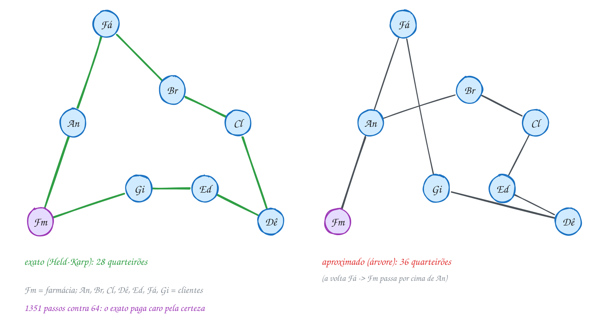
S é uma máscara de bits (0186); o bit 0, a farmácia, está sempre ligado, por isso o laço anda de 2 em 2:
#include <stdbool.h>
#include <stdio.h>
#include <stdlib.h>
#define N 8
#define INF 1000000000
const char *pontos[N] = {"Farmácia", "Ana", "Bruno", "Clara", "Dênis", "Edna", "Fábio", "Gil"};
const int px[N] = {0, 1, 4, 6, 7, 5, 2, 3};
const int py[N] = {0, 3, 4, 3, 0, 1, 6, 1};
int d[N][N];
long passos;
// exato: Held-Karp. dp[S][j] = menor caminho que sai da farmácia, passa
// por todos de S e termina em j
int dp[1 << N][N], ant[1 << N][N];
int exato(int rota[]) {
for (int s = 0; s < (1 << N); s++)
for (int j = 0; j < N; j++) dp[s][j] = INF;
dp[1][0] = 0;
for (int s = 1; s < (1 << N); s += 2) // só conjuntos com a farmácia (bit 0)
for (int j = 0; j < N; j++) {
if (!(s >> j & 1) || dp[s][j] == INF) continue;
for (int k = 1; k < N; k++) { // estende o caminho até k
if (s >> k & 1) continue;
passos++;
int t = s | 1 << k, c = dp[s][j] + d[j][k];
if (c < dp[t][k]) dp[t][k] = c, ant[t][k] = j;
}
}
int todos = (1 << N) - 1, fim = 1;
for (int j = 2; j < N; j++)
if (dp[todos][j] + d[j][0] < dp[todos][fim] + d[fim][0]) fim = j;
int custo = dp[todos][fim] + d[fim][0];
for (int i = N - 1, s = todos, j = fim; i >= 0; i--) { // volta pelos anteriores
rota[i] = j;
int a = ant[s][j];
s &= ~(1 << j);
j = a;
}
return custo;
}
// aproximado: árvore mínima (Prim) + pré-ordem
int pai[N], tam;
void preordem(int u, int rota[]) {
rota[tam++] = u;
for (int v = 1; v < N; v++)
if (pai[v] == u) preordem(v, rota);
}
int aproximado(int rota[]) {
int chave[N];
bool dentro[N] = {false};
for (int v = 0; v < N; v++) chave[v] = INF, pai[v] = -1;
chave[0] = 0;
for (int k = 0; k < N; k++) {
int u = -1;
for (int v = 0; v < N; v++)
if (!dentro[v] && (u == -1 || chave[v] < chave[u])) u = v;
dentro[u] = true;
for (int v = 0; v < N; v++, passos++)
if (!dentro[v] && d[u][v] < chave[v]) chave[v] = d[u][v], pai[v] = u;
}
tam = 0;
preordem(0, rota);
int custo = 0;
for (int i = 0; i < N; i++) custo += d[rota[i]][rota[(i + 1) % N]];
return custo;
}
void mostra(const char *nome, int custo, const int rota[]) {
printf("%s: %d quarteirões, %ld passos\n ", nome, custo, passos);
for (int i = 0; i < N; i++) printf(" %s", pontos[rota[i]]);
printf(" %s\n", pontos[0]);
}
int main(void) {
for (int a = 0; a < N; a++)
for (int b = 0; b < N; b++) d[a][b] = abs(px[a] - px[b]) + abs(py[a] - py[b]);
int rota[N];
passos = 0;
int c1 = exato(rota);
mostra("Exato (Held-Karp)", c1, rota);
passos = 0;
int c2 = aproximado(rota);
mostra("Aproximado (árvore)", c2, rota);
printf("O aproximado gasta %.0f%% a mais\n", 100.0 * (c2 - c1) / c1);
return 0;
}
// Saída:
// Exato (Held-Karp): 28 quarteirões, 1351 passos
// Farmácia Gil Edna Dênis Clara Bruno Fábio Ana Farmácia
// Aproximado (árvore): 36 quarteirões, 64 passos
// Farmácia Ana Bruno Clara Edna Dênis Gil Fábio Farmácia
// O aproximado gasta 29% a mais
O aproximado errou por 29%, longe do dobro permitido, e fez 64 passos contra 1351. O fluxograma é a decisão de um programa real: poucos pontos, exato; muitos, aproximado e melhorado:
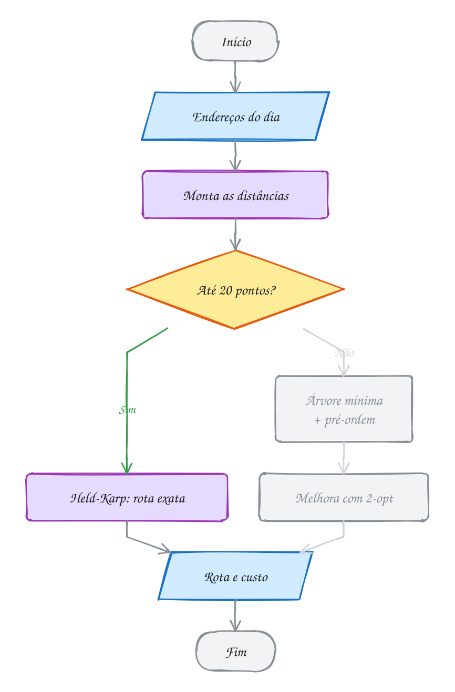
Exemplo A377 · Até onde o exato aguenta
#include <stdio.h>
#include <stdlib.h>
#define MAXN 16
#define INF 1000000000
int n, d[MAXN][MAXN];
int dp[1 << MAXN][MAXN]; // 4 MB: global, fora da pilha
long held_karp(int *custo) {
long passos = 0;
for (int s = 0; s < (1 << n); s++)
for (int j = 0; j < n; j++) dp[s][j] = INF;
dp[1][0] = 0;
for (int s = 1; s < (1 << n); s += 2)
for (int j = 0; j < n; j++) {
if (!(s >> j & 1) || dp[s][j] == INF) continue;
for (int k = 1; k < n; k++) {
if (s >> k & 1) continue;
passos++;
int t = s | 1 << k, c = dp[s][j] + d[j][k];
if (c < dp[t][k]) dp[t][k] = c;
}
}
*custo = INF;
for (int j = 1; j < n; j++)
if (dp[(1 << n) - 1][j] + d[j][0] < *custo) *custo = dp[(1 << n) - 1][j] + d[j][0];
return passos;
}
int main(void) {
unsigned semente = 2024; // gerador simples: os mesmos pontos em toda execução
int px[MAXN], py[MAXN];
for (int i = 0; i < MAXN; i++) {
semente = semente * 1103515245u + 12345u;
px[i] = (int)(semente >> 16) % 20;
semente = semente * 1103515245u + 12345u;
py[i] = (int)(semente >> 16) % 20;
}
printf(" n rota ótima passos Held-Karp memória da tabela (n-1)! rotas\n");
for (n = 4; n <= MAXN; n += 4) {
for (int a = 0; a < n; a++)
for (int b = 0; b < n; b++) d[a][b] = abs(px[a] - px[b]) + abs(py[a] - py[b]);
int custo;
long passos = held_karp(&custo);
double fat = 1;
for (int k = 2; k < n; k++) fat *= k;
printf("%2d %10d %16ld %14.1f KB %12.0f\n", n, custo, passos,
(double)(1 << n) * n * sizeof(int) / 1024, fat);
}
printf("Para n = 25: tabela de %.1f GB\n", (double)(1 << 25) * 25 * sizeof(int) / (1024.0 * 1024 * 1024));
return 0;
}
// Saída:
// n rota ótima passos Held-Karp memória da tabela (n-1)! rotas
// 4 52 15 0.2 KB 6
// 8 66 1351 8.0 KB 5040
// 12 74 56331 192.0 KB 39916800
// 16 78 1720335 4096.0 KB 1307674368000
// Para n = 25: tabela de 3.1 GB
//
// Os pontos vêm de um gerador linear congruente com semente fixa: a saída
// é sempre a mesma. Cada 4 pontos a mais multiplicam os passos do
// Held-Karp por 30 a 90 e a memória por 16 x (n+4)/n; a força bruta
// multiplica por milhares. Em 16 pontos, 1,7 milhão de passos contra 1,3
// trilhão de rotas. Mas a tabela cresce junto: com 25 pontos ela já não
// cabe na memória de um notebook comum, e o exato para de ser opção.
gcc ~/LPEDC/material/A377.c -o ~/LPEDC/material/A377 && ~/LPEDC/material/A377
Exemplo A378 · 2-opt: desfazendo os cruzamentos da rota aproximada
#include <stdio.h>
#include <stdlib.h>
#define N 8
const char *pontos[N] = {"Farmácia", "Ana", "Bruno", "Clara", "Dênis", "Edna", "Fábio", "Gil"};
const int px[N] = {0, 1, 4, 6, 7, 5, 2, 3};
const int py[N] = {0, 3, 4, 3, 0, 1, 6, 1};
int d[N][N];
int custo(const int r[]) {
int c = 0;
for (int i = 0; i < N; i++) c += d[r[i]][r[(i + 1) % N]];
return c;
}
void inverte(int r[], int i, int j) { // inverte o trecho r[i..j]
while (i < j) {
int t = r[i];
r[i++] = r[j];
r[j--] = t;
}
}
int main(void) {
for (int a = 0; a < N; a++)
for (int b = 0; b < N; b++) d[a][b] = abs(px[a] - px[b]) + abs(py[a] - py[b]);
int rota[N] = {0, 1, 2, 3, 5, 4, 7, 6}; // a rota da árvore mínima do texto
printf("Início: %d quarteirões\n", custo(rota));
// 2-opt: troca as arestas (a, b) e (c, e) por (a, c) e (b, e) se encurtar
int melhorou = 1;
while (melhorou) {
melhorou = 0;
for (int i = 1; i < N - 1 && !melhorou; i++)
for (int j = i + 1; j < N && !melhorou; j++) {
int a = rota[i - 1], b = rota[i], c = rota[j], e = rota[(j + 1) % N];
int ganho = d[a][b] + d[c][e] - d[a][c] - d[b][e];
if (ganho > 0) {
inverte(rota, i, j);
printf(" inverte %s..%s: -%d -> %d\n", pontos[b], pontos[c], ganho, custo(rota));
melhorou = 1;
}
}
}
printf("Final:");
for (int i = 0; i < N; i++) printf(" %s", pontos[rota[i]]);
printf(" %s = %d quarteirões\n", pontos[0], custo(rota));
return 0;
}
// Saída:
// Início: 36 quarteirões
// inverte Ana..Gil: -2 -> 34
// inverte Dênis..Edna: -2 -> 32
// inverte Ana..Fábio: -4 -> 28
// Final: Farmácia Gil Edna Dênis Clara Bruno Fábio Ana Farmácia = 28 quarteirões
//
// Inverter um trecho da rota troca duas arestas por outras duas; quando a
// soma das novas é menor, a rota encurta. Aqui, três inversões levaram a
// rota da árvore (36) até o ótimo do Held-Karp (28), com algumas
// centenas de contas. Nem sempre o 2-opt chega ao ótimo: ele para num
// ótimo LOCAL, onde nenhuma troca de duas arestas ajuda. Mas cada volta é
// O(n²), e na prática ele costuma ficar a poucos por cento do ótimo.
gcc ~/LPEDC/material/A378.c -o ~/LPEDC/material/A378 && ~/LPEDC/material/A378
Exercício E1129 · ★☆☆
O padeiro entrega pão em quatro pontos e volta. Coordenadas em quarteirões: Padaria (0, 0), Escola (3, 2), Posto (5, 5), Banco (1, 4), Feira (4, 0). Escreva o programa que monta a matriz de distâncias (|dx| + |dy|), mostra a tabela (nomes com %8s no cabeçalho e %-8s nas linhas, números com %8d) e calcula o custo de duas rotas fechadas:
rota 1: Padaria Escola Posto Banco Feira (e volta)
rota 2: Padaria Feira Escola Posto Banco (e volta)
Saída esperada:
Padaria Escola Posto Banco Feira
Padaria 0 5 10 5 4
Escola 5 0 5 4 3
Posto 10 5 0 5 6
Banco 5 4 5 0 7
Feira 4 3 6 7 0
Rota 1: 26 quarteirões
Rota 2: 22 quarteirões
Exercício E1131 · ★★☆
Confira o Held-Karp do texto pela força bruta das permutações (0126): escreva void permuta(int pos, int acum, bool poda), que monta todas as rotas a partir da farmácia (rota[0] = 0) para os mesmos oito pontos do texto, guarda o menor custo em melhor e conta as chamadas e as rotas completas. Com poda = true, a função volta logo no começo se acum já chegou a melhor (branch and bound, 0127). Rode as duas versões.
Saída esperada:
Sem poda: ótimo 28, 5040 rotas completas, 13700 chamadas
Com poda: ótimo 28, 110 rotas completas, 6977 chamadas
Exercício E1132 · ★★☆
Escreva o Held-Karp para a padaria do E1129 (cinco pontos, distância |dx| + |dy|) com a tabela dp[1 << N][N], sem guardar a tabela de anteriores (a memória do servidor não comporta outra do mesmo tamanho). Mostre a menor volta e reconstrua a rota só com dp[][]: o ponto que veio antes de k no conjunto s é o primeiro j (de s sem k) tal que dp[s sem k][j] + d[j][k] == dp[s][k]. Comece em (todos, fim) e ande para trás até sobrar só a padaria. No empate do último ponto, vale o menor índice.
Saída esperada:
Menor volta: 22 quarteirões
Rota: Padaria Feira Escola Posto Banco Padaria
Exercício E1133 · ★★★
Monte o planejador de entregas do fluxograma: a função void planeja(const char *nome, const int px[], const int py[], int n) calcula as distâncias em quarteirões e decide sozinha:
- até 12 pontos: Held-Karp, mostra o custo exato;
- mais que isso: árvore mínima (Prim a partir do ponto 0) + pré-ordem,
depois 2-opt (A378) até nenhuma troca melhorar; mostra o peso da
árvore, o custo da rota antes e depois do 2-opt.
Teste com a manhã (os 8 pontos do texto) e a tarde: 30 pontos gerados assim, com semente = 7 (unsigned), para i de 0 a 29:
semente = semente * 1103515245u + 12345u; x[i] = (int)(semente >> 16) % 25;
semente = semente * 1103515245u + 12345u; y[i] = (int)(semente >> 16) % 25;
Saída esperada:
Manhã (8 pontos): exato, 28 quarteirões
Tarde (30 pontos): aproximado, árvore 111, rota 172, com 2-opt 148
30 exercícios que misturam os assuntos do módulo, no ritmo da prova. Arquivos P2901.c a P2930.c, em material/; resoluções em _respostas/29-grafos-e-np/lista/.
Exercício P2901 · ★☆☆ · Graus do metrô
O metrô tem sete estações (0 a 6): Sé, Luz, Brás, Arena, Parque, Vila e Porto. Os trilhos, de mão dupla, ligam:
Sé-Luz, Sé-Brás, Luz-Brás, Luz-Arena, Brás-Parque, Arena-Parque,
Parque-Vila, Arena-Vila, Vila-Porto
Escreva o programa do zero: mostre o grau de cada estação, a estação de maior grau (a primeira, em caso de empate), a soma dos graus comparada com 2E e quantas estações têm grau ímpar.
Saída esperada:
Sé: 2
Luz: 3
Brás: 3
Arena: 3
Parque: 3
Vila: 3
Porto: 1
Maior grau: Luz (3)
Soma dos graus: 18 = 2 x 9
Estações de grau ímpar: 6
Exercício P2902 · ★☆☆ · Fontes e sumidouros
A reforma de uma casa tem oito tarefas (0 a 7): Projeto, Demolição, Elétrica, Hidráulica, Reboco, Piso, Pintura e Limpeza. A seta a -> b diz "a precisa acabar antes de b":
Projeto->Demolição, Demolição->Elétrica, Demolição->Hidráulica,
Elétrica->Reboco, Hidráulica->Reboco, Reboco->Piso, Reboco->Pintura,
Piso->Limpeza, Pintura->Limpeza
Escreva o programa: mostre o grau de entrada e o de saída de cada tarefa, confira que as duas somas dão E e liste as FONTES (grau de entrada 0: podem começar já) e os SUMIDOUROS (grau de saída 0: ninguém depende delas).
Saída esperada:
Projeto: entrada 0, saída 1
Demolição: entrada 1, saída 2
Elétrica: entrada 1, saída 1
Hidráulica: entrada 1, saída 1
Reboco: entrada 2, saída 2
Piso: entrada 1, saída 1
Pintura: entrada 1, saída 1
Limpeza: entrada 2, saída 0
Somas: entrada 9, saída 9
Fontes: Projeto
Sumidouros: Limpeza
Resposta esperada: Num grafo sem ciclo existe sempre pelo menos uma fonte e um sumidouro.
Exercício P2903 · ★☆☆ · Passeio, trajeto ou caminho
No parque há seis quiosques (A a F) e as trilhas A-B, B-C, C-D, D-A, B-D, D-E, E-F. Um corredor anota a sequência de quiosques por onde passou. Escreva int classifica(const char *s), que devolve 0 se a sequência não é um passeio (alguma trilha não existe), 1 para passeio (repete trilha), 2 para trajeto (repete quiosque, não trilha), 3 para caminho (não repete nada). Se a sequência for fechada, os nomes viram passeio fechado, circuito e ciclo. Mostre o nome e o COMPRIMENTO (número de trilhas). Teste: ABCD, ABCDB, ABCDBA, ABCDA, DEFD.
Saída esperada:
ABCD caminho, comprimento 3
ABCDB trajeto, comprimento 4
ABCDBA passeio fechado, comprimento 5
ABCDA ciclo, comprimento 4
DEFD não é passeio, comprimento 3
Resposta esperada: DEFD falha porque não existe a trilha F-D, por mais que a sequência pareça um triângulo.
Exercício P2904 · ★☆☆ · Diagnóstico de Euler por lista de arestas
Três prefeituras mandaram o mapa das ruas como lista de arestas (pode haver duas ruas entre as mesmas esquinas). Para cada mapa, diga se o caminhão da varrição consegue passar por toda rua uma vez e voltar (circuito), passar por toda rua sem voltar (trajeto, dizendo de onde a onde) ou nenhum dos dois:
Mapa 1 (5 esquinas): 0-1, 1-2, 2-0, 2-3, 3-4, 4-2
Mapa 2 (5 esquinas): 0-1, 1-2, 2-3, 3-0, 0-2, 1-3, 1-4, 4-3
Mapa 3 (6 esquinas): 0-1, 1-2, 2-0, 3-4, 4-5, 5-3
Escreva void diagnostico(int nv, int ne, int a[][2]) e use-a nos três.
Saída esperada:
Mapa 1: circuito
Mapa 2: trajeto de 0 a 2
Mapa 3: nenhum (desconexo)
Resposta esperada: O mapa 3 tem todos os graus pares e mesmo assim não tem circuito.
Exercício P2905 · ★☆☆ · Conferindo a rota do ônibus circular
O ônibus circular passa por seis pontos (0 a 5), numa cidade de ruas de mão única. As ruas dirigidas são:
0->1, 1->2, 2->3, 3->4, 4->5, 5->0, 1->4, 3->1, 4->2, 2->0
A empresa recebeu quatro propostas de rota (começando no ponto 0; a volta ao 0 fica subentendida) e quer saber quais são ciclos hamiltonianos DIRIGIDOS. Escreva o verificador bool valida(const int r[], int n), que mostra "ok" ou o primeiro problema: "falta ponto", "repete o ponto X" ou "não há rua X->Y" (inclusive na volta).
A: 0 1 2 3 4 5 B: 0 1 4 2 3 1 C: 0 1 4 5 2 3 D: 0 1 4 2 3
Saída esperada:
A: ok
B: repete o ponto 1
C: não há rua 5->2
D: falta ponto
Resposta esperada: O verificador custa O(n): é por isso que o problema do ciclo hamiltoniano está em NP.
Exercício P2906 · ★☆☆ · Verificador de cobertura com limite
A versão de decisão da cobertura de vértices pergunta: "existe uma cobertura com no máximo k vértices?". O certificado é a própria lista. Uma rede tem sete roteadores (0 a 6) e os cabos:
0-1, 0-2, 1-3, 2-3, 3-4, 4-5, 4-6, 5-6
Escreva bool confere(const int c[], int tam, int k), que mostra o veredito e o primeiro cabo descoberto, se houver. Teste os certificados {0, 3, 4, 5} com k = 4, {1, 2, 4, 6} com k = 4, {0, 3, 4, 6} com k = 3 e {1, 2, 5, 6} com k = 4.
Saída esperada:
aceito
aceito
rejeitado: 4 vértices, limite 3
rejeitado: cabo 3-4 descoberto
Resposta esperada: Conferir custa O(V + E); achar a menor cobertura é NP-difícil.
Exercício P2907 · ★☆☆ · Clique ou independente?
Numa turma de oito alunos (0 a 7), as amizades são:
0-1, 0-2, 0-3, 1-2, 1-3, 2-3, 3-4, 4-5, 5-6, 6-7, 4-6
Escreva int tipo(const int s[], int k), que devolve 2 se o grupo é uma clique (todos amigos entre si), 1 se é independente (nenhum par amigo) e 0 se não é nenhum dos dois, e mostre o resultado para os grupos {0, 1, 2, 3}, {0, 4, 7}, {4, 5, 6}, {2, 5, 7} e {3, 4, 5}.
Saída esperada:
{0, 1, 2, 3}: clique
{0, 4, 7}: independente
{4, 5, 6}: clique
{2, 5, 7}: independente
{3, 4, 5}: nenhum dos dois
Resposta esperada: Os dois verificadores custam O(k²).
Exercício P2908 · ★☆☆ · Custo de uma ordem de multiplicação
Cinco matrizes têm dimensões p = 6, 2, 9, 4, 7, 3 (Ai é p[i-1] x p[i]). Calcule, com uma função long custo_esq(int i, int j) e outra long custo_dir(int i, int j), o número de multiplicações das duas ordens "ingênuas": da esquerda para a direita, ((((A1 A2) A3) A4) A5), e da direita para a esquerda, (A1 (A2 (A3 (A4 A5)))). Mostre também as dimensões do resultado.
Saída esperada:
Resultado: 6 x 3
Da esquerda: 618
Da direita: 282
Resposta esperada: Nenhuma das duas é a ótima: a PD do 0185 acha uma ordem com 206 multiplicações.
Exercício P2909 · ★☆☆ · O verificador do caixeiro viajante
A versão de decisão do caixeiro viajante é: "existe uma volta por todas as cidades com custo no máximo L?". Cinco cidades (0 a 4) têm a matriz de distâncias (km) do main abaixo; -1 quer dizer "sem estrada". Escreva bool aceita(const int r[], int n, int limite), que confere o certificado (é uma permutação das 5 cidades, toda estrada existe, a volta incluída) e compara o custo com o limite. Teste:
0 1 2 3 4 com L = 90 0 2 4 1 3 com L = 100
0 1 3 2 4 com L = 100 0 1 3 2 4 com L = 90
Saída esperada:
aceito (custo 87)
rejeitado (sem estrada 4-1)
aceito (custo 94)
rejeitado (custo 94 > 90)
Resposta esperada: O mesmo certificado pode ser aceito para um L e rejeitado para outro.
Exercício P2910 · ★☆☆ · Mudança em caminhões
Uma família vai se mudar e o caminhão leva 12 m³ por viagem. Os volumes, na ordem em que estão na sala, são 5, 7, 3, 8, 4, 2, 6, 3 m³. Escreva o first fit decrescente (ordene uma cópia com qsort) e mostre o conteúdo de cada viagem, quanto sobra nela e o limite inferior.
Saída esperada:
Viagem 1: 8 4 (sobram 0)
Viagem 2: 7 5 (sobram 0)
Viagem 3: 6 3 3 (sobram 0)
Viagem 4: 2 (sobram 10)
Limite inferior: 4 viagens
Resposta esperada: a saída acima: o FFD bateu o limite inferior, logo é ótimo aqui.
Exercício P2911 · ★★☆ · Circuito com ruas paralelas
O mapa da varrição tem cinco esquinas (0 a 4) e sete ruas, numeradas na ordem da lista; entre 0 e 1 há duas ruas paralelas, e entre 2 e 4 também:
r0: 0-1 r1: 1-0 r2: 1-2 r3: 2-3 r4: 3-1 r5: 2-4 r6: 4-2
A matriz 0/1 não guarda ruas paralelas, então trabalhe com a lista e um vetor bool usada[7]. Escreva o Hierholzer com pilha: no topo u, pegue a rua livre de MENOR número que toca u, marque-a e empilhe a outra ponta. Mostre o circuito (esquinas) e a ordem das ruas usadas.
Saída esperada:
Circuito: 0 1 2 4 2 3 1 0
Ruas: r0 r2 r5 r6 r3 r4 r1
Resposta esperada: Todos os graus são pares (2, 4, 4, 2, 2), então o circuito existe.
Exercício P2912 · ★★☆ · Trajeto euleriano dirigido
Um barco de passeio faz trechos de rio que só podem ser navegados no sentido da correnteza. Portos 0 a 4, trechos dirigidos:
0->1, 1->2, 2->0, 0->3, 3->1, 1->4
O barco quer navegar todos os trechos uma vez cada, sem precisar voltar ao início. Escreva o programa que mostra saída - entrada de cada porto, escolhe o início (o porto com saída - entrada = 1; se todos forem 0, o porto 0) e roda o Hierholzer dirigido a partir dele.
Saída esperada:
Porto 0: saída - entrada = 1
Porto 1: saída - entrada = 0
Porto 2: saída - entrada = 0
Porto 3: saída - entrada = 0
Porto 4: saída - entrada = -1
Trajeto: 0 1 2 0 3 1 4
Resposta esperada: O trajeto termina no porto 4, o único com entrada - saída = 1.
Exercício P2913 · ★★☆ · Todos os caminhos hamiltonianos de s a t
Um fiscal precisa visitar as seis obras de uma avenida (0 a 5), cada uma uma vez, saindo do escritório na obra 0 e terminando em casa, perto da obra 5. As vias entre as obras são:
0-1, 0-2, 1-2, 1-3, 2-3, 2-4, 3-4, 3-5, 4-5
Escreva o backtracking que lista TODOS os caminhos hamiltonianos de 0 a 5 (vizinhos em ordem de índice) e conta as chamadas da recursão.
Saída esperada:
Caminho 1: 0 1 2 3 4 5
Caminho 2: 0 1 2 4 3 5
Caminho 3: 0 1 3 2 4 5
Caminho 4: 0 2 1 3 4 5
Total: 4 caminhos, 26 chamadas
Resposta esperada: a saída acima (com a poda do 5).
Exercício P2914 · ★★☆ · Pontes com lista de adjacência
Uma rede de oito servidores (0 a 7) tem os cabos:
0-1, 1-2, 2-0, 2-3, 3-4, 4-5, 5-3, 5-6, 6-7
Monte o grafo como LISTA de adjacência dinâmica (cada vértice com um vetor alocado com malloc do tamanho do seu grau) e rode a DFS com tin e low a partir do 0. Mostre as pontes, na ordem em que a DFS as acha, e as articulações, em ordem de índice. Libere tudo no fim.
Saída esperada:
Ponte: 6-7
Ponte: 5-6
Ponte: 2-3
Articulações: 2 3 5 6
Resposta esperada: Com lista, a DFS custa O(V + E) em vez de O(V²).
Exercício P2915 · ★★☆ · A rede é robusta?
Uma rede é "robusta" para a operadora quando é conexa e nenhum cabo sozinho a desconecta (não tem ponte). Escreva void avalia(const char *nome, int nv, int ne, int c[][2]) que conta os componentes e as pontes (uma DFS com tin e low por componente) e dá o veredito. Teste:
R1 (6 nós): 0-1, 1-2, 2-0, 3-4, 4-5, 5-3
R2 (6 nós): 0-1, 1-2, 2-0, 2-3, 3-4, 4-5, 5-3
R3 (6 nós): 0-1, 1-2, 2-3, 3-4, 4-5, 5-0, 0-3
Saída esperada:
R1: 2 componente(s), 0 ponte(s): frágil
R2: 1 componente(s), 1 ponte(s): frágil
R3: 1 componente(s), 0 ponte(s): robusta
Resposta esperada: R1 não tem ponte, mas está partida em dois; R2 está inteira, mas o cabo 2-3 é ponte.
Exercício P2916 · ★★☆ · Tabela de cortes e parênteses
Seis matrizes têm dimensões p = 20, 40, 10, 6, 15, 30, 12 (Ai é p[i-1] x p[i]). Preencha m e s pela PD do 0185 (laço externo pelo tamanho da cadeia) e mostre a tabela s (só i < j; "-" no resto, cada casa com %3s ou %3d), o custo mínimo e a parentização ótima.
Saída esperada:
Tabela s:
- 1 1 3 3 3
- - 2 3 3 3
- - - 3 3 3
- - - - 4 5
- - - - - 5
- - - - - -
Custo mínimo: 13500
Ordem: ((A1 (A2 A3)) ((A4 A5) A6))
Exercício P2917 · ★★☆ · Contando as soluções de uma fórmula
A escala de um posto de saúde usa cinco variáveis (x1 a x5: cada médico está ou não de plantão) e esta fórmula 3-CNF, guardada no formato +v/-v:
(x1 ou x2 ou x3) (não x1 ou não x2 ou x4) (x2 ou não x3 ou x5)
(não x4 ou não x5 ou x1) (x3 ou x4 ou não x2) (não x1 ou não x3 ou não x5)
Escreva o verificador e a força bruta pelas 2^5 máscaras (bit v-1 é xv). Mostre cada atribuição que satisfaz como uma sequência de 0 e 1 (x1 a x5) e o total.
Saída esperada:
10000
01100
10010
01010
11010
01110
11110
10001
00101
01101
10011
11011
Total: 12 de 32
Exercício P2918 · ★★☆ · Clique pelo resolvedor de independente
Agora o contrário do 0187: você só tem uma caixa-preta que acha o MAIOR CONJUNTO INDEPENDENTE (já pronta no esqueleto) e precisa achar a maior clique de uma rede de colaboração entre sete pesquisadores (0 a 6):
0-1, 0-2, 0-3, 1-2, 1-3, 2-3, 2-4, 3-4, 4-5, 5-6, 4-6
Complete o main: monte o complemento, chame maior_independente nele e mostre a clique e o tamanho. Mostre também a menor cobertura de vértices do COMPLEMENTO (o resto dos vértices).
Saída esperada:
Maior clique: 0 1 2 3 (4)
Cobertura do complemento: 4 5 6 (3)
Exercício P2919 · ★★☆ · Quão longe do ótimo fica a 2-aproximação?
Rode a cobertura de vértices 2-aproximada (arestas na ordem dada; aresta descoberta -> as duas pontas entram) e a cobertura ótima por força bruta em três grafos de 8 vértices, e mostre a razão:
caminho: 0-1, 1-2, 2-3, 3-4, 4-5, 5-6, 6-7
estrela: 0-1, 0-2, 0-3, 0-4, 0-5, 0-6, 0-7
completo + caminho: 0-1, 0-2, 0-3, 1-2, 1-3, 2-3, 4-5, 5-6, 6-7
Escreva void compara(const char *nome, int ne, int a[][2]).
Saída esperada:
caminho: aprox 8, ótimo 4, razão 2.00
estrela: aprox 2, ótimo 1, razão 2.00
completo + caminho: aprox 8, ótimo 5, razão 1.60
Resposta esperada: A razão nunca passa de 2: no caminho e na estrela ela bate exatamente em 2; com o K4 ela cai.
Exercício P2920 · ★★☆ · Quatro heurísticas contra o ótimo
Nove encomendas (em kg) vão em motos que levam 10 kg: 6, 3, 7, 2, 5, 4, 5, 3, 5. Compare next fit, first fit, best fit e first fit decrescente com o ótimo, que você acha por backtracking: tente pôr cada encomenda (na ordem decrescente) em cada moto já aberta onde caiba ou numa nova, e corte quando o número de motos já igualar o melhor achado.
Saída esperada:
Next fit: 5
First fit: 5
Best fit: 5
First fit decrescente: 4
Ótimo: 4
Resposta esperada: Soma 40: o limite inferior é 4.
Exercício P2921 · ★★★ · A raiz que não é articulação
Uma malha de ciclovias tem sete pontos (0 a 6) e os trechos:
0-1, 1-2, 2-0, 1-3, 3-4, 4-1, 4-5, 5-6
Tirando o ponto 0, o resto continua ligado. Mas o programa abaixo, que roda a DFS a partir do 0, diz que ele é articulação.
Saída que aparece:
Articulações: 0 1 4 5
Saída esperada:
Articulações: 1 4 5
O programa compila e roda sem erro; o problema é de lógica. Conserte-o.
Exercício P2922 · ★★★ · A dimensão trocada
A cadeia tem quatro matrizes, p = 8, 20, 4, 30, 6 (Ai é p[i-1] x p[i]). O programa abaixo segue a recorrência do 0185, mas devolve um custo e uma ordem errados.
Saída que aparece:
Custo: 3600
Ordem: (A1 ((A2 A3) A4))
Saída esperada:
Custo: 1552
Ordem: ((A1 A2) (A3 A4))
O programa compila e roda sem erro; o problema é de lógica. Conserte-o.
Exercício P2923 · ★★★ · O carteiro e as duas esquinas ímpares
O carteiro precisa passar por toda rua do bairro e voltar ao correio (esquina 0). Se o grafo tem exatamente duas esquinas ímpares, ele terá de repetir ruas: o mínimo a mais é a distância mais curta entre essas duas esquinas (problema do carteiro chinês). Ruas com o comprimento em metros:
0-1 100, 1-2 80, 2-3 120, 3-0 90, 2-4 60, 4-5 70, 5-2 50, 1-4 200
Escreva o programa: some os comprimentos, ache as esquinas ímpares, rode Floyd-Warshall (0155) e mostre a distância extra e o total percorrido.
Saída esperada:
Ruas: 770 m
Esquinas ímpares: 1 e 4
Extra: 140 m
Total: 910 m
Resposta esperada: Repare que o carteiro não repete a rua 1-4 (200 m): ele refaz 1-2-4, que soma 140 m.
Exercício P2924 · ★★★ · Código de Gray: um ciclo hamiltoniano no hipercubo
No hipercubo de dimensão 4, os vértices são os números de 0 a 15 e dois são vizinhos quando diferem em exatamente um bit. O código de Gray, g(i) = i ^ (i >> 1), percorre os 16 vértices formando um ciclo hamiltoniano. Escreva o programa que gera a sequência, mostra cada vértice em binário (4 dígitos) e confere com um verificador: 16 vértices distintos, e cada vizinho da sequência (inclusive o último com o primeiro) difere em um bit só.
Saída esperada:
0000 0001 0011 0010 0110 0111 0101 0100
1100 1101 1111 1110 1010 1011 1001 1000
Ciclo hamiltoniano: sim
Resposta esperada: Para o hipercubo, achar o ciclo é fácil porque o grafo tem estrutura; o difícil é o caso geral.
Exercício P2925 · ★★★ · De 3-SAT para conjunto independente
Outra redução clássica: 3-SAT para CONJUNTO INDEPENDENTE. Cada literal de cada cláusula vira um vértice; ligue (1) os três vértices de uma mesma cláusula entre si (um triângulo) e (2) todo par de vértices contraditórios (x e não x), em qualquer cláusula. A fórmula é satisfatível se e só se o grafo tem um conjunto independente de tamanho m (o número de cláusulas). Para
(x1 ou x2 ou não x3) (não x1 ou x3 ou x4) (não x2 ou não x4 ou x3)
(x1 ou não x3 ou não x4)
monte o grafo, mostre quantas arestas ele tem, procure pela força bruta (máscaras de 12 bits com exatamente 4 bits ligados, em ordem crescente) o primeiro conjunto independente de tamanho 4 e traduza-o numa atribuição (variável não escolhida fica falsa). Confira a atribuição na fórmula.
Saída esperada:
Grafo: 12 vértices, 21 arestas
Independente: x1 x3 não x2 x1
Atribuição: x1=V x2=F x3=V x4=F
Satisfaz a fórmula? sim
Resposta esperada: São 12 arestas dos triângulos mais as dos pares contraditórios.
Exercício P2926 · ★★★ · De ciclo hamiltoniano para caixeiro viajante
A redução que prova que o caixeiro viajante é NP-difícil: dado um grafo G com n vértices, monte a matriz de custos d[a][b] = 1 se a-b é aresta de G e 2 se não é. G tem ciclo hamiltoniano se e só se a volta mais barata custa exatamente n. Escreva a redução e resolva o caixeiro pelo Held-Karp, para dois grafos de 6 vértices:
G1: 0-1, 0-2, 0-4, 1-2, 1-3, 2-3, 3-4, 3-5, 4-5 (as agências do 0183)
G2: 0-1, 1-2, 2-0, 0-3, 3-4, 4-0, 0-5, 5-1 (gravata com um extra)
Saída esperada:
G1: volta mais barata = 6 -> tem ciclo hamiltoniano
G2: volta mais barata = 7 -> não tem
Exercício P2927 · ★★★ · Rota mais curta que termina em casa
O entregador da farmácia do 0189 não volta para a farmácia: depois da última entrega ele vai para casa, que fica no ponto do Gil (índice 7). Pontos (quarteirões): Farmácia (0,0), Ana (1,3), Bruno (4,4), Clara (6,3), Dênis (7,0), Edna (5,1), Fábio (2,6), Gil (3,1). Adapte o Held-Karp para CAMINHO hamiltoniano de 0 até 7: a resposta é dp[todos][7], sem volta. Reconstrua a rota com uma tabela ant[][] e compare com a volta fechada (28 quarteirões).
Saída esperada:
Caminho até a casa: 24 quarteirões
Farmácia -> Ana -> Fábio -> Bruno -> Clara -> Dênis -> Edna -> Gil
Volta fechada era 28; terminar no Gil economiza 4
Exercício P2928 · ★★★ · Exato contra três aproximações
Compare quatro jeitos de montar a volta do entregador em três dias diferentes, cada um com 9 pontos (o ponto 0 é a loja). Os pontos de cada dia vêm deste gerador, com semente = 11 * dia (dia = 1, 2, 3), coordenadas de 0 a 14 e distância em quarteirões:
semente = semente * 1103515245u + 12345u; x[i] = (int)(semente >> 16) % 15;
semente = semente * 1103515245u + 12345u; y[i] = (int)(semente >> 16) % 15;
Para cada dia mostre: o ótimo (Held-Karp), o vizinho mais próximo, a árvore mínima em pré-ordem e a árvore seguida de 2-opt, com a razão de cada aproximação para o ótimo (%.2f).
Saída esperada:
dia ótimo vizinho árvore árvore+2opt
1 52 60 (1.15) 60 (1.15) 52 (1.00)
2 44 58 (1.32) 54 (1.23) 44 (1.00)
3 58 68 (1.17) 70 (1.21) 58 (1.00)
Resposta esperada: A árvore nunca passa de 2 vezes o ótimo; o vizinho mais próximo não tem essa garantia.
Exercício P2929 · ★★★ · Cobertura exata por ramificação
A cobertura de vértices é NP-difícil, mas existe um truque quando a resposta k é pequena: pegue uma aresta descoberta u-v; alguma das pontas TEM de estar na cobertura. Então tente u (e resolva com k - 1) e, se não der, tente v. São no máximo 2^k ramos, não importa o tamanho do grafo. Num grafo de 12 vértices (0 a 11) com as arestas
0-1, 1-2, 2-3, 3-0, 4-5, 5-6, 6-4, 7-8, 8-9, 9-10, 10-11, 11-7, 0-4, 2-7
escreva bool cobre(int k), que decide se existe cobertura de tamanho no máximo k, e ache o menor k testando k = 0, 1, 2, ... Conte as chamadas e compare com as 2^12 máscaras da força bruta. Mostre a cobertura achada.
Saída esperada:
Menor cobertura: 7 vértices: 0 2 4 5 7 8 10
Chamadas: 319 (força bruta: 4096 máscaras)
Resposta esperada: As chamadas somam todos os k testados, e mesmo assim ficam bem abaixo de 4096.
Exercício P2930 · ★★★ · A praça sem ruas
O bairro tem as esquinas 0 a 5 com as ruas 0-1, 1-2, 2-0, 2-3, 3-4, 4-5, 5-2 (todos os graus pares) e acabou de ganhar a esquina 6, uma praça que ainda não tem rua nenhuma. O caminhão de lixo continua podendo passar por toda rua uma vez e voltar, mas o programa abaixo diz que não.
Saída que aparece:
Sem circuito: o bairro está partido
Saída esperada:
Tem circuito euleriano
O programa compila e roda sem erro; o problema é de lógica. Conserte-o.
Problemas para resolver no papel e, quando fizer sentido, num arquivo .c
seu. Eles misturam os assuntos do módulo.
1. Graus impossíveis. Existe um grafo simples com cinco vértices, todos de grau 3? E com seis vértices de graus 5, 5, 4, 3, 2, 1?
O primeiro não: a soma dos graus seria 15, ímpar, e ela precisa ser 2E. O segundo tem soma 20 (par), mas também não existe: os dois vértices de grau 5 são ligados a todos os outros cinco, então o vértice de grau 1 já estaria ligado a dois. A soma par é necessária, não suficiente. Caminho: lema do aperto de mãos e um argumento de contagem.
2. Königsberg com pontes novas. As sete pontes de Königsberg ligam 4 margens com graus 5, 3, 3 e 3. Quantas pontes novas, no mínimo, permitem um circuito euleriano? E um trajeto aberto?
São 4 vértices ímpares. Cada ponte nova muda a paridade de duas pontas. Para o circuito, 2 pontes (pareando os ímpares). Para o trajeto aberto, basta sobrarem 2 ímpares: 1 ponte. É o raciocínio do E1092 ao contrário.
3. Euler e Hamilton no cubo. O cubo tem 8 vértices e 12 arestas, todos os vértices de grau 3. Ele tem circuito euleriano? E ciclo hamiltoniano?
Circuito euleriano, não (grau 3 é ímpar). Ciclo hamiltoniano, sim: numere os vértices de 000 a 111 e percorra 000, 001, 011, 010, 110, 111, 101, 100 e volte. Cada passo troca um bit só (é o código de Gray). Um dos dois pode existir sem o outro.
4. Pontes numa árvore. Numa árvore com n vértices, quantas pontes existem? Quem são as articulações?
Todas as n - 1 arestas são pontes: árvore não tem ciclo, então nenhuma
aresta tem caminho alternativo. As articulações são os vértices de grau
pelo menos 2 (os que não são folhas), desde que n ≥ 3. Confira com o
programa do texto: em árvore, low[v] = tin[v] para todo v.
5. Ponte e articulação andam juntas? Se u - v é ponte, u é articulação? E o contrário: toda articulação toca uma ponte?
Ponte u - v implica que u é articulação se u tiver grau pelo menos 2 (se u for folha, tirá-lo não separa nada). O contrário é falso: no texto, Flores é articulação e as duas arestas dela que ficam no triângulo não são pontes; numa gravata (A365), o Mirante é articulação e não toca ponte nenhuma.
6. Três matrizes. A1 é 2 × 50, A2 é 50 × 2 e A3 é 2 × 50. Qual a melhor ordem e quantas multiplicações ela custa? E a pior?
(A1 A2) A3: 2 · 50 · 2 + 2 · 2 · 50 = 200 + 200 = 400. A outra,
A1 (A2 A3): 50 · 2 · 50 + 2 · 50 · 50 = 5000 + 5000 = 10000, 25 vezes
mais. Regra de bolso: elimine logo a dimensão grande que está "no meio".
7. Certificado para o "não". Para "o grafo tem ciclo hamiltoniano?", o certificado do sim é a rota. Qual seria um certificado curto para o "não tem"?
Não se conhece nenhum. "Não ter ciclo hamiltoniano" é um problema de co-NP, e ninguém sabe se NP = co-NP. Em casos especiais existe prova curta (um vértice de grau 1, uma articulação), mas não em geral. É por isso que o backtracking do A365 só diz "não" depois de esgotar tudo.
8. Estrela. Na estrela com um centro e 5 pontas, qual a maior clique, o maior conjunto independente e a menor cobertura? Quanto a 2-aproximação da cobertura devolve?
Maior clique: 2 (qualquer aresta). Maior independente: 5 (as pontas). Menor cobertura: 1 (o centro), e 5 + 1 = 6 = n, como manda o teorema do 0187. A 2-aproximação pega uma aresta e põe as duas pontas: 2, exatamente o dobro do ótimo.
9. O first fit na ordem pior. Capacidade 10 e itens 2, 2, 2, 2, 8, 8, 8, 8 (nessa ordem). Quantas caixas o first fit usa? E o first fit decrescente?
First fit: os quatro 2 enchem 8 da primeira caixa, e cada 8 vai sozinho: 5 caixas. Decrescente: cada 8 abre uma caixa e cada 2 completa uma: 4, que é o limite inferior (40 / 10). A ordem dos itens decide o resultado.
10. Garantia em números. Num caixeiro viajante métrico, a árvore geradora mínima pesa 50. Entre quais valores está o ótimo? E a rota da pré-ordem?
O ótimo é maior que 50 (tirando uma aresta do ciclo ótimo sobra uma árvore geradora, que pesa pelo menos 50) e a rota da pré-ordem é no máximo 100 (duas vezes a árvore). Logo 50 < ótimo ≤ rota ≤ 100.
11. Memória do Held-Karp. Com int de 4 bytes, quanto ocupa a tabela
dp[1 << n][n] para n = 20 e para n = 30? E a de anteriores?
n = 20: 2²⁰ × 20 × 4 bytes = 80 MB. n = 30: 2³⁰ × 30 × 4 bytes = 120 GB (mais 120 GB para os anteriores, se guardados). O tempo, O(n² 2ⁿ), também pesa, mas é a memória que costuma parar o exato primeiro. O E1132 reconstrói a rota sem a segunda tabela.
Questões reais do POSCOMP (SBC) sobre este módulo. O enunciado está no caderno oficial: abra o link, resolva e confira o gabarito.
| Ano | Questão | Assunto | Gabarito | Prova |
|---|---|---|---|---|
| 2019 | 40 | Classes P, NP e NP-completo | E | caderno |
| 2024 | 37 | Autômatos, Turing e NP-completo (assertivas) | E | caderno |
Questões objetivas como as da prova do PPGI. Todo código foi compilado e rodado antes de fixar o gabarito.
Questão 1. Um grafo simples não dirigido tem 6 vértices e 9 arestas. Cinco vértices têm graus 3, 3, 4, 2 e 2. Qual o grau do sexto?
(D). Pelo lema do aperto de mãos, a soma dos graus é 2 × 9 = 18. Os cinco somam 14, então o sexto tem grau 4. Veja 0182.
Questão 2. Qual destes grafos tem circuito euleriano?
(E). No K5 todo vértice tem grau 4 (par) e o grafo é conexo. K4, K3,3 e o cubo têm todos os graus iguais a 3; a casinha tem dois vértices de grau 3 (tem trajeto aberto, não circuito). Veja 0182.
Questão 3. O que o programa mostra?
#include <stdio.h>
int main(void) {
int g[5][5] = {{0, 1, 1, 0, 0},
{1, 0, 1, 1, 1},
{1, 1, 0, 1, 1},
{0, 1, 1, 0, 0},
{0, 1, 1, 0, 0}};
int impares = 0;
for (int u = 0; u < 5; u++) {
int grau = 0;
for (int v = 0; v < 5; v++) grau += g[u][v];
if (grau % 2) impares++;
}
if (impares == 0) printf("circuito\n");
else if (impares == 2) printf("trajeto\n");
else printf("nenhum\n");
return 0;
}
circuitotrajetonenhum(A). Os graus são 2, 4, 4, 2, 2: nenhum ímpar. (O programa não confere a conexidade, mas este grafo é conexo.) Veja 0182.
Questão 4. Sobre circuito euleriano e ciclo hamiltoniano, analise as afirmações.
Marque a alternativa CORRETA.
(C). I e II são verdadeiras. III é falsa: a gravata do A365 tem todos os graus pares (circuito euleriano) e nenhum ciclo hamiltoniano. Para o hamiltoniano não se conhece teste rápido, só o verificador polinomial. Veja 0183 e 0186.
Questão 5. O programa abaixo roda a DFS com tin e low. O que ele
mostra?
#include <stdio.h>
int g[6][6], tin[6], low[6], t = 0;
void dfs(int u, int p) {
tin[u] = low[u] = ++t;
for (int v = 0; v < 6; v++) {
if (!g[u][v] || v == p) continue;
if (tin[v]) { if (tin[v] < low[u]) low[u] = tin[v]; continue; }
dfs(v, u);
if (low[v] < low[u]) low[u] = low[v];
if (low[v] > tin[u]) printf("%d-%d\n", u, v);
}
}
int main(void) {
int e[][2] = {{0, 1}, {1, 2}, {2, 0}, {2, 3}, {3, 4}, {4, 5}, {5, 3}};
for (int k = 0; k < 7; k++) g[e[k][0]][e[k][1]] = g[e[k][1]][e[k][0]] = 1;
dfs(0, -1);
return 0;
}
2-32-3 e 3-40-1 e 2-32-3, 3-4 e 4-5(B). São dois triângulos (0-1-2 e 3-4-5) ligados pela aresta 2-3, a única
ponte. Dentro de cada triângulo há caminho alternativo, então low[v] volta
ao ancestral e o teste low[v] > tin[u] falha. Veja 0184.
Questão 6. Matrizes A1 (5 × 10), A2 (10 × 3), A3 (3 × 12) e A4 (12 × 5). Qual o menor número de multiplicações escalares para calcular A1 A2 A3 A4?
(A). A ordem ótima é (A1 A2)(A3 A4): 150 + 180 + 5 · 3 · 5 = 405. Da
esquerda para a direita custaria 150 + 180 + 300 = 630; A1 (A2 (A3 A4)),
580. O 330 é m[1][3] (e também m[2][4]), não a cadeia inteira. Veja
0185.
Questão 7. Sobre as classes P e NP, analise as afirmações.
Marque a alternativa CORRETA.
(D). NP é "verificável em tempo polinomial", não "não polinomial" (II é falsa), e todo problema de P é verificável rápido (I). III é a razão de se procurar um algoritmo rápido para qualquer NP-completo. IV é falsa: P versus NP está em aberto. Veja 0186.
Questão 8. Para provar que um problema novo X é NP-difícil, basta:
(C). Se um NP-completo Y satisfaz Y ≤p X, um algoritmo rápido para X resolveria Y. A alternativa (A) é o sentido errado: mostra só que X não é mais difícil que SAT. (D) mostra que X está em NP, não que é difícil. Veja 0187.
Questão 9. Num grafo G com 10 vértices, o maior conjunto independente tem 4 vértices. Então:
(B). S é independente em G ⇔ S é clique no complemento ⇔ V − S é cobertura de G. Maior independente com 4 dá maior clique do complemento com 4 e menor cobertura com 10 − 4 = 6. Sobre a clique do próprio G nada se conclui (A). Veja 0187.
Questão 10. O programa aplica o first fit com caixas de capacidade 10. O que ele mostra?
#include <stdio.h>
int main(void) {
int item[] = {5, 7, 5, 2, 4, 2, 5, 1, 6}, livre[9], caixas = 0;
for (int i = 0; i < 9; i++) {
int c = 0;
while (c < caixas && livre[c] < item[i]) c++;
if (c == caixas) livre[caixas++] = 10;
livre[c] -= item[i];
}
printf("%d\n", caixas);
return 0;
}
(E). As caixas ficam (5 5), (7 2 1), (4 2), (5) e (6). O limite inferior é 37 / 10 → 4, e 4 caixas são possíveis, por exemplo (5 5), (7 2 1), (6 4) e (5 2): o first fit não é ótimo, mas tem garantia. Veja 0188.